3 Case Study 2: ICO Thinning Prescription
use raw point clouds to generate a spatial tree list inventory for use implementing the Individuals, Clumps, and Openings (ICO) method defined by Churchill et al. (2016) to generate a cut-retention prescription. The trees2ico package and workflow determines which trees to ‘cut’ or ‘keep’ based on stand-level targets for basal area and specific clump size proportions.
3.1 Data
point cloud data was created using digital aerial photogrammetry (DAP) methods (specifically, structure-from-motion) on imagery collected from Unmanned Aircraft System (UAS) flights completed in June 2024. UAS imagery was collected using a DJI Phantom 4 Pro equipped with a 20 megapixel metal oxide semiconductor red-green-blue camera at a fixed 8.8 mm focal length. Flights followed a pre-programmed serpentine flight paths at an altitude of 120 m above ground level, using a nadir camera orientation, with 80% forward and side image overlap.The UAS imagery was processed in Agisoft Metashape using the routine outlined by Tinkham and Swayze (2021).
3.2 Point Cloud Processing
In this section we’ll process the raw point cloud data using the cloud2trees R package developed to provide accessible routines for processing point cloud data collected by airborne lidar or generated using UAS imagery and photogrammetry (e.g. structure from motion).
The cloud2trees package can be installed by following the directions listed in the README file on GitHub. If one is still experiencing difficulties installing the package, see the setup guide which details how to install the package using a virgin R instance.
## remotes helps us get packages hosted on github
install.packages("remotes")
## get cloud2trees
remotes::install_github(repo = "georgewoolsey/cloud2trees", upgrade = F)Load the standard libraries we use to do work
# bread-and-butter
library(tidyverse) # the tidyverse
library(viridis) # viridis colors
library(harrypotter) # hp colors
library(RColorBrewer) # brewer colors
library(scales) # work with number and plot scales
library(latex2exp)
# visualization
library(mapview) # interactive html maps
library(kableExtra) # tables
library(patchwork) # combine plots
# spatial analysis
library(terra) # raster
library(sf) # simple features
library(lidR) # lidar data
library(cloud2trees) # the cloud2trees3.2.1 Lidar Data Location
Let’s check out the lidar data we got from the Mogollon Rim area of the Coconino National Forest about 20 km north of Payson, Arizona, USA using the USGS LidarExplorer.
# directory with the downloaded .las|.laz files
f <- "f:\\UAS_Collections\\ManitouEF_202406\\Processed\\N1"
# is there data?
list.files(f, pattern = ".*\\.(laz|las)$") %>% length()## [1] 1## [1] "N1_laz.laz"what information does lidR read from the catalog?
## class : LAScatalog (v1.2 format 2)
## extent : 489879.1, 490422.4, 4330507, 4331033 (xmin, xmax, ymin, ymax)
## coord. ref. : NAD83 / UTM zone 13N
## area : 285551.3 m²
## points : 216.2 million points
## type : terrestrial
## density : 757.1 points/m²
## density : 757.1 pulses/m²
## num. files : 1that’s a lot of points…can an ordinary laptop handle it? we’ll find out.
We’ll plot our point cloud data tiles real quick to orient ourselves
3.2.2 Individial Tree Detection Tuning: itd_tuning()
The cloud2trees package performs individual tree detection using lidR::locate_trees() with the lidR::lmf() algorithm. The local maximum filter algorithm allows for a constant window size or a variable window size defined by a function. See the lidR package book section by point cloud processing expert Jean-Romain Roussel for excellent detail on ITD and defining window size.
The itd_tuning() function is used to visually assess tree crown delineation results from different window size functions used for the detection of individual trees. itd_tuning() allows users to test different window size functions on a sample of data to determine which function is most suitable for the area being analyzed. The preferred function can then be used in the ws parameter in raster2trees() and cloud2trees().
Let’s run itd_tuning() on our data starting with default window size functions
itd_tuning_ans <-
cloud2trees::itd_tuning(
input_las_dir = f
, n_samples = 4
, min_height = 1.37
, chm_res_m = 0.25
)what does cloud2trees::itd_tuning() give us?
## [1] "plot_samples" "ws_fn_list" "plot_sample_summary"
## [4] "crowns"it’s a named list. let’s check out the plot_* results
itd_tuning_ans$plot_samples
# write the file to the disk for posterity
ggplot2::ggsave(filename = "../data/itd_tuning_plot_samples1.jpg", height = 11, width = 8, dpi = "print")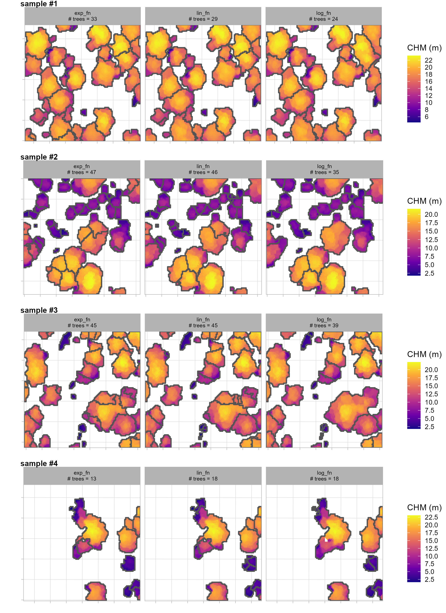
the most noticeable difference between the window functions is with the segmentation of tall areas of the CHM using the log_fn compared to the other two. this function appears to not be separating tall trees appropriately: it is under-segmenting these areas resulting in too few tall trees. this under-segmentation by the log_fn can be seen most clearly in the top-right tall tree group of sample 1
comparing the lin_fn (linear function) and exp_fn (exponential function) shows that both functions result in similar segmentation results for taller trees but the primary differences appear for shorter trees. The difference in short-tree segmentation between these two functions is most evident in sample 2 where the lin_fn predicts many more small trees than the exp_fn.
let’s check out the resulting tree distribution of the different window functions over these sample areas
itd_tuning_ans$plot_sample_summary
# write the file to the disk for posterity
ggplot2::ggsave(filename = "../data/itd_tuning_plot_sample_summary1.jpg", height = 11, width = 8, dpi = "print")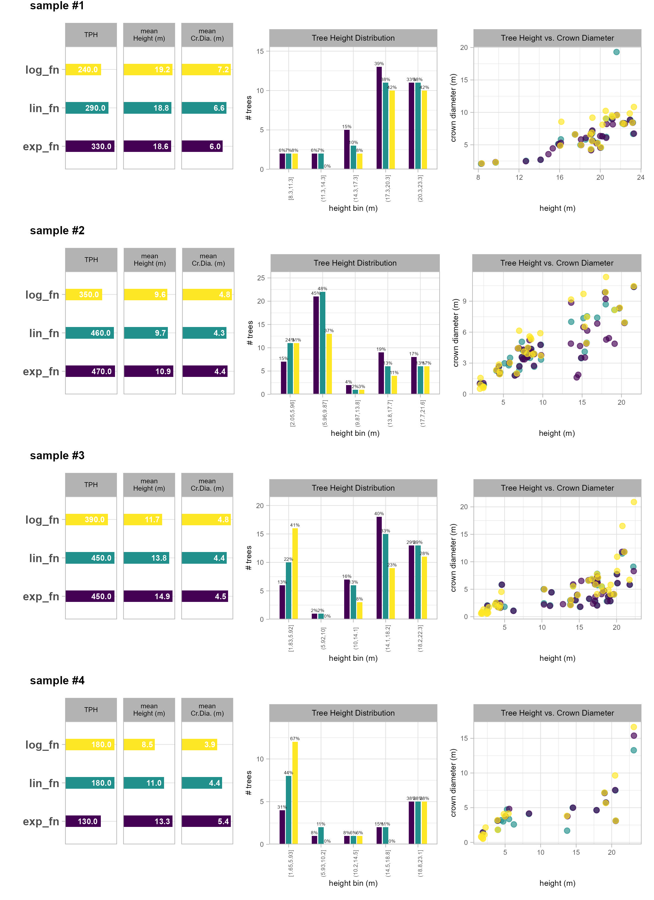
these results confirm what we identified about the log_fn compared to the other two: that it under-segments taller trees. predicting too few tall trees by not separating multiple tree crowns has the effect of producing tall trees with very wide crowns.
let’s look at the default window function named lin_fn (i.e. linear function) from cloud2trees to see how we might adjust it to obtain different tree segmentation results
## function (x)
## {
## y <- dplyr::case_when(is.na(x) ~ 0.001, x < 0 ~ 0.001, x <
## 2 ~ 1, x > 30 ~ 5, TRUE ~ 0.75 + (x * 0.14))
## return(y)
## }
## <bytecode: 0x000002406287e6c8>
## <environment: 0x00000241ee6238b0>it’s a function defining the window size (called y) based on the CHM height (called x)
let’s make a custom linear function that limits the search window for shorter trees but keeps roughly the same window size for taller trees between 15-25 m (we don’t expect many trees above this in our study area)
# define a custom function
my_linear <- function(x){
y <- dplyr::case_when(
is.na(x) ~ 0.001
, x < 0.01 ~ 0.001
# next piece:
# we want it to pass through ~ (3.0,1.00)
# m = (y2-y1)/(x2-x1) >> m = (1.00-0.001)/(3.0-0.01) = 0.3341137
# b = y-(m*x) >> b = 0.001-(0.3341137*0.01) = -0.002341137
, x < 3.0 ~ -0.002341137 + x*0.3341137
# next piece:
# at x=3.0, first segment y = -0.002341137+3.0*0.3341137 = 1.00 >> (3.0,1.00)
# connect to (32.5,5)
# m = (5-1.00)/(32.5-3.0) = 0.1355932
# b = 1.00-(0.1355932*3.0) = 0.5932204
, x <= 32.5 ~ 0.5932204 + x*0.1355932
# upper limit starts at (32.5,5)
, x > 32.5 ~ 5
)
return(y)
}
# my_linearwe can plot the two default functions that we did not rule out based on the first set of cloud2trees::itd_tuning() samples along with our custom linear function
# plot the ws fn
ggplot2::ggplot() +
ggplot2::geom_function(fun = itd_tuning_ans$ws_fn_list$lin_fn, aes(color = "lin_fn"), lwd = 1) +
ggplot2::geom_function(fun = itd_tuning_ans$ws_fn_list$exp_fn, aes(color = "exp_fn"), lwd = 1) +
ggplot2::geom_function(fun = my_linear, aes(color = "my_linear"), lwd = 1) +
ggplot2::xlim(-5,42) +
ggplot2::labs(x = "heights", y = "ws", color = "") +
ggplot2::theme_light()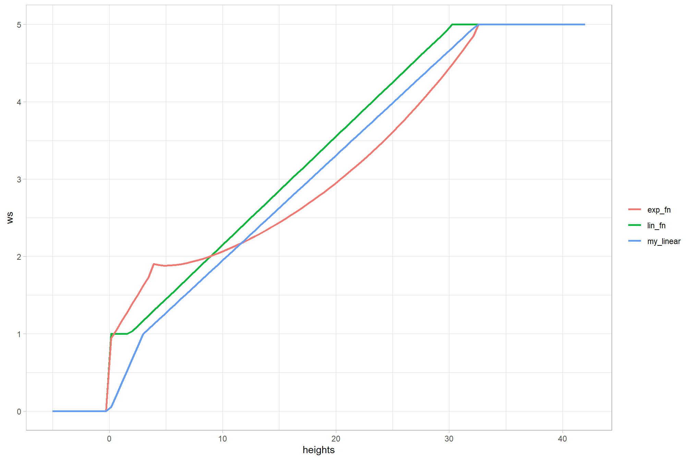
nice, we should get more small trees and split the difference between the two default functions since we felt pretty good about the segmentation for the taller trees
re-run tuning with new function
# let's put these in a list to test with the best default function we saved from above
my_fn_list <- list(
lin_fn = cloud2trees::itd_ws_functions()[["lin_fn"]]
, exp_fn = cloud2trees::itd_ws_functions()[["exp_fn"]]
, my_linear = my_linear
)
itd_tuning_ans2 <-
cloud2trees::itd_tuning(
input_las_dir = f
, ws_fn_list = my_fn_list
, n_samples = 4
, min_height = 1.37
, chm_res_m = 0.25
)let’s check out the plot_* results
itd_tuning_ans2$plot_samples
# write the file to the disk for posterity
ggplot2::ggsave(filename = "../data/itd_tuning_plot_samples2.jpg", height = 11, width = 8, dpi = "print")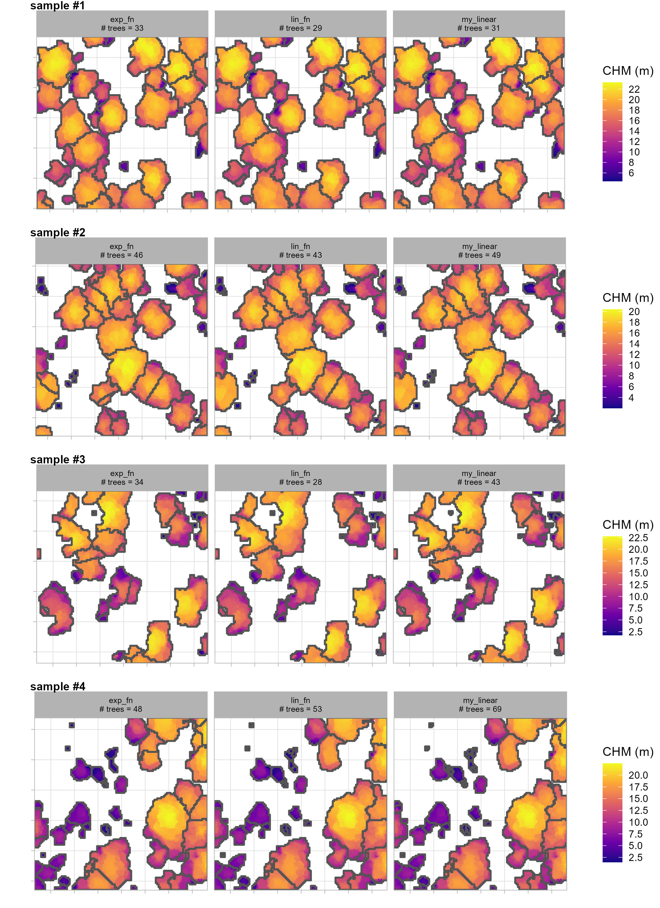
Our custom my_linear function appears to do a good job striking a balance between the default lin_fn which tended to undersegment taller trees an the exp_fn which tended to undersegment shorter trees. The custom function and the exp_fn yield similar tree segmentation results for sample 1 which is what we expected since that area consists primarily of taller trees and the biggest change we made to my_linear function was to limit the search window at the taller range and expand the search window for shorter trees so that less were detected compared to the default lin_fn. One notable difference with the exp_fn (exponential function) in sample 1 is in the lower left corner where the custom function limited crown sprawl for one of the taller objects in the scene an yielded more realistic crown shapes. Our custom my_linear function yields fewer small trees than the default lin_fn (but more than the exp_fn) since we allowed a larger window size at lower portions of the CHM with this effect most clear for the short trees (purple CHM regions) on sample 2.
we like the results with our custom linear function which we’ll use in the cloud2trees() function.
3.2.3 Point Cloud Tree Extraction: cloud2trees()
The cloud2trees() function combines methods in the cloud2trees package for an all-in-one approach. We’ll call this function estimating the additional tree components (the estimate_* parameters):
accuracy_level = 2- uses triangulation with high point density (20 pts/m2) to height normalize the pointskeep_intrmdt = T- keeps intermediate files created in the processing (e.g. height-normalized points)dtm_res_m = 0.5- sets the output DTM resolution to 0.5x0.5 mchm_res_m = 0.25- sets the output CHM resolution to 0.25x0.25 m which is also used for tree detectionmin_height = 1.37- the minimum height of a predicted segment that is required to be kept as a detected “tree”ws = my_linear- the window function used in ITDestimate_tree_dbh = TRUE- estimates DBH based on tree heightestimate_tree_type = TRUE- estimates FIA forest type group for the tree list
# outdir
c2t_output_dir <- "../data/processed_uas"
if(!dir.exists(c2t_output_dir)) dir.create(c2t_output_dir)
c2t_process_dir <- file.path(c2t_output_dir, "point_cloud_processing_delivery")
##############################################################
# cloud2trees::cloud2trees
##############################################################
if(
!file.exists( file.path(c2t_process_dir, "chm_0.25m.tif") )
|| !file.exists( file.path(c2t_process_dir, "dtm_0.5m.tif") )
|| !file.exists( file.path(c2t_process_dir, "final_detected_tree_tops.gpkg") )
|| !file.exists( file.path(c2t_process_dir, "final_detected_crowns.gpkg") )
){
# run it
# cloud2trees
cloud2trees_ans <- cloud2trees::cloud2trees(
output_dir = c2t_output_dir
, input_las_dir = f
, accuracy_level = 2
, keep_intrmdt = T
, dtm_res_m = 0.5
, chm_res_m = 0.25
, min_height = 1.37 # 1.37 = DBH
, ws = my_linear # a custom function
###################################
# optional parameters to get more tree attributes
###################################
, estimate_tree_dbh = TRUE # DBH
, estimate_tree_type = TRUE # FIA type
)
}else{
dtm_temp <- terra::rast( file.path(c2t_process_dir, "dtm_0.5m.tif") )
chm_temp <- terra::rast( file.path(c2t_process_dir, "chm_0.25m.tif") )
crowns_temp <- sf::st_read(file.path(c2t_process_dir, "final_detected_crowns.gpkg"), quiet = T)
ttops_temp <- sf::st_read(file.path(c2t_process_dir, "final_detected_tree_tops.gpkg"), quiet = T)
cloud2trees_ans <- list(
"dtm_rast" = dtm_temp
, "chm_rast" = chm_temp
, "crowns_sf" = crowns_temp
, "treetops_sf" = ttops_temp
)
}3.2.3.1 Raster Products
there’s a DTM
# plot to check out the fine-resolution DTM raster
cloud2trees_ans$dtm_rast %>% terra::plot(main = "DTM (m)")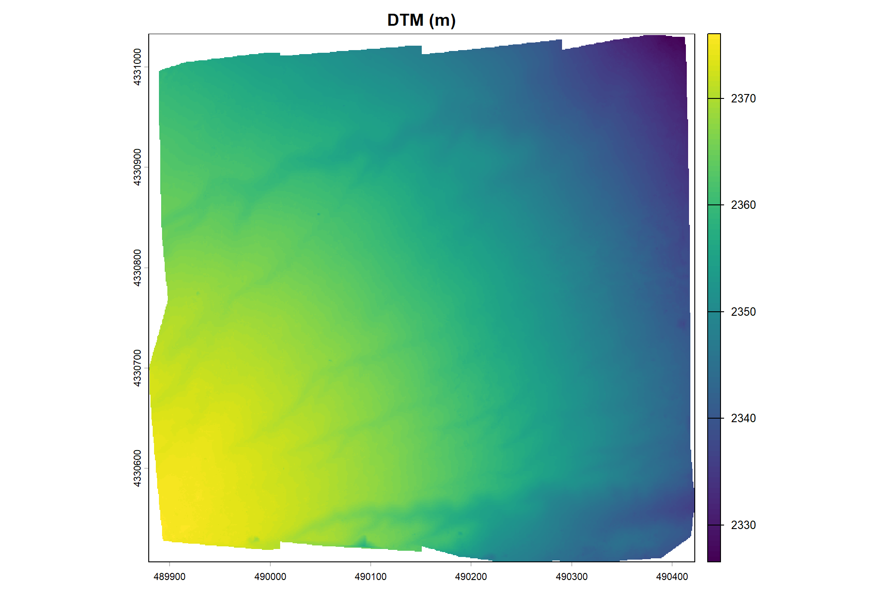
there’s a CHM
# plot to check out the fine-resolution CHM raster
cloud2trees_ans$chm_rast %>%
terra::plot(col = viridis::plasma(n=100), main = "CHM (m)")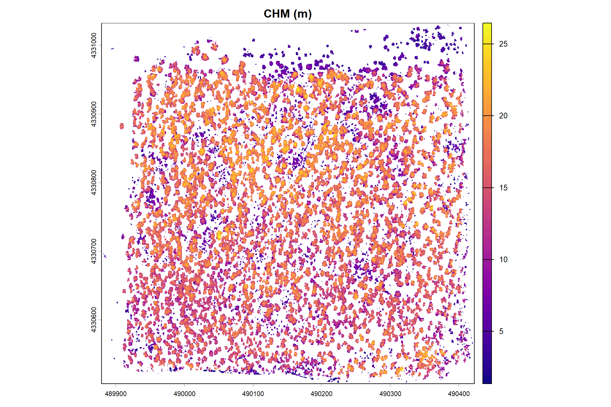
let’s see some details about the CHM
## class : SpatRaster
## size : 2103, 2172, 1 (nrow, ncol, nlyr)
## resolution : 0.25, 0.25 (x, y)
## extent : 489879.2, 490422.2, 4330507, 4331033 (xmin, xmax, ymin, ymax)
## coord. ref. : NAD83 / UTM zone 13N (EPSG:26913)
## source : chm_0.25m.tif
## name : chm
## min value : 1.373
## max value : 26.7083.2.3.2 Tree list
let’s check out the tree top point data (the crowns data will have the same data attributes but have polygon geometry instead of point geometry)
## Rows: 10,039
## Columns: 25
## $ treeID <chr> "1_490383.6_4331031.1", "2_490385.9_4331028.…
## $ tree_height_m <dbl> 4.054, 1.613, 1.457, 6.772, 1.457, 1.676, 1.…
## $ crown_area_m2 <dbl> 2.0000, 0.2500, 0.1250, 12.4375, 0.1250, 0.1…
## $ fia_est_dbh_cm <dbl> 6.772366, 3.274525, 3.066893, 11.558164, 3.0…
## $ fia_est_dbh_cm_lower <dbl> 4.002622, 1.945000, 1.805381, 6.814490, 1.80…
## $ fia_est_dbh_cm_upper <dbl> 10.461659, 5.132453, 4.739510, 17.896934, 4.…
## $ dbh_cm <dbl> 6.772366, 3.274525, 3.066893, 11.558164, 3.0…
## $ is_training_data <lgl> FALSE, FALSE, FALSE, FALSE, FALSE, FALSE, FA…
## $ dbh_m <dbl> 0.06772366, 0.03274525, 0.03066893, 0.115581…
## $ radius_m <dbl> 0.03386183, 0.01637262, 0.01533447, 0.057790…
## $ basal_area_m2 <dbl> 0.0036022244, 0.0008421440, 0.0007387325, 0.…
## $ basal_area_ft2 <dbl> 0.038774344, 0.009064838, 0.007951717, 0.112…
## $ ptcld_extracted_dbh_cm <dbl> NA, NA, NA, NA, NA, NA, NA, NA, NA, NA, NA, …
## $ ptcld_predicted_dbh_cm <dbl> NA, NA, NA, NA, NA, NA, NA, NA, NA, NA, NA, …
## $ tree_cbh_m <dbl> NA, NA, NA, NA, NA, NA, NA, NA, NA, NA, NA, …
## $ is_training_cbh <lgl> NA, NA, NA, NA, NA, NA, NA, NA, NA, NA, NA, …
## $ forest_type_group_code <chr> "220", "180", "180", "220", "180", "180", "1…
## $ forest_type_group <chr> "Ponderosa pine group", "Pinyon / juniper gr…
## $ hardwood_softwood <chr> "Softwood", "Softwood", "Softwood", "Softwoo…
## $ comp_trees_per_ha <dbl> NA, NA, NA, NA, NA, NA, NA, NA, NA, NA, NA, …
## $ comp_relative_tree_height <dbl> NA, NA, NA, NA, NA, NA, NA, NA, NA, NA, NA, …
## $ comp_dist_to_nearest_m <dbl> NA, NA, NA, NA, NA, NA, NA, NA, NA, NA, NA, …
## $ max_crown_diam_height_m <dbl> NA, NA, NA, NA, NA, NA, NA, NA, NA, NA, NA, …
## $ is_training_hmd <lgl> NA, NA, NA, NA, NA, NA, NA, NA, NA, NA, NA, …
## $ geom <POINT [m]> POINT (490383.6 4331031), POINT (49038…note, we only really need tree location and DBH to implement the ICO method, so we were able to save on processing time by not extracting CBH or HMD. If we were interested in utilizing those tree-level metrics for additional analysis or planning beyond implementing the ICO method, then we would need to enable those options in cloud2trees()
let’s check the relationship between height and DBH as estimated by the regional allometric relationship
cloud2trees_ans$treetops_sf %>%
sf::st_drop_geometry() %>%
dplyr::slice_sample(prop = 0.55) %>%
ggplot2::ggplot(mapping = ggplot2::aes(x = tree_height_m, y = dbh_cm)) +
ggplot2::geom_point(color = "plum4", alpha = 0.6) +
ggplot2::labs(x = "tree ht. (m)", y = "tree DBH (cm)") +
ggplot2::scale_x_continuous(limits = c(0,NA), breaks = scales::breaks_extended(n=8)) +
ggplot2::scale_y_continuous(limits = c(0,NA), breaks = scales::breaks_extended(n=8)) +
ggplot2::theme_light()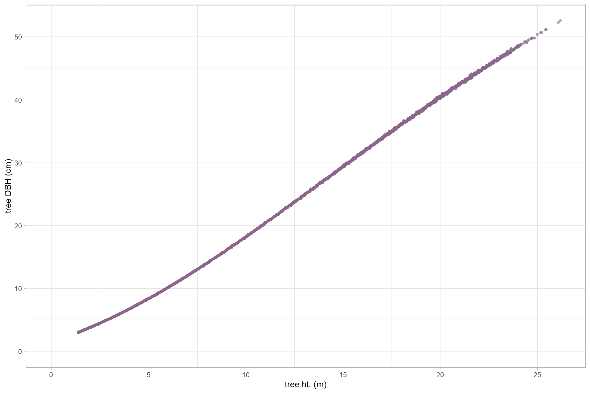
Let’s look at the distribution of tree diameter in our study area
cloud2trees_ans$treetops_sf %>%
sf::st_drop_geometry() %>%
ggplot2::ggplot(mapping = ggplot2::aes(x = dbh_cm)) +
ggplot2::geom_density(fill = "brown", color = "brown", alpha = 0.2) +
ggplot2::scale_x_continuous(breaks = scales::breaks_extended(11)) +
ggplot2::labs(x = "tree DBH (cm)", y = "") +
ggplot2::theme_light() +
ggplot2::theme(axis.text.y = ggplot2::element_blank(), axis.ticks.y = ggplot2::element_blank())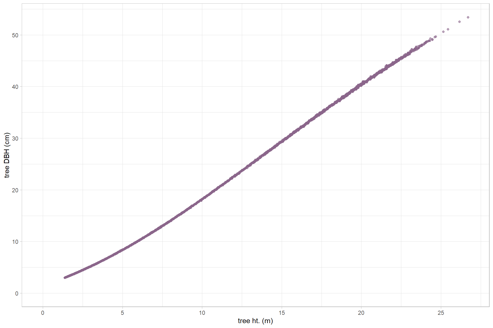
let’s look at the summary statistics of DBH and height
cloud2trees_ans$treetops_sf %>%
sf::st_drop_geometry() %>%
dplyr::select(dbh_cm,tree_height_m) %>%
summary()## dbh_cm tree_height_m
## Min. : 2.953 Min. : 1.373
## 1st Qu.: 4.796 1st Qu.: 2.745
## Median :12.906 Median : 7.449
## Mean :19.204 Mean : 9.906
## 3rd Qu.:34.519 3rd Qu.:17.330
## Max. :53.414 Max. :26.708lots of small trees. what if we only count trees that are at least 2 m in height?
cloud2trees_ans$treetops_sf %>%
sf::st_drop_geometry() %>%
dplyr::filter(tree_height_m>=2) %>%
ggplot2::ggplot(mapping = ggplot2::aes(x = dbh_cm)) +
ggplot2::geom_density(fill = "brown", color = "brown", alpha = 0.2) +
ggplot2::scale_x_continuous(breaks = scales::breaks_extended(11)) +
ggplot2::labs(x = "tree DBH (cm)", y = "") +
ggplot2::theme_light() +
ggplot2::theme(axis.text.y = ggplot2::element_blank(), axis.ticks.y = ggplot2::element_blank())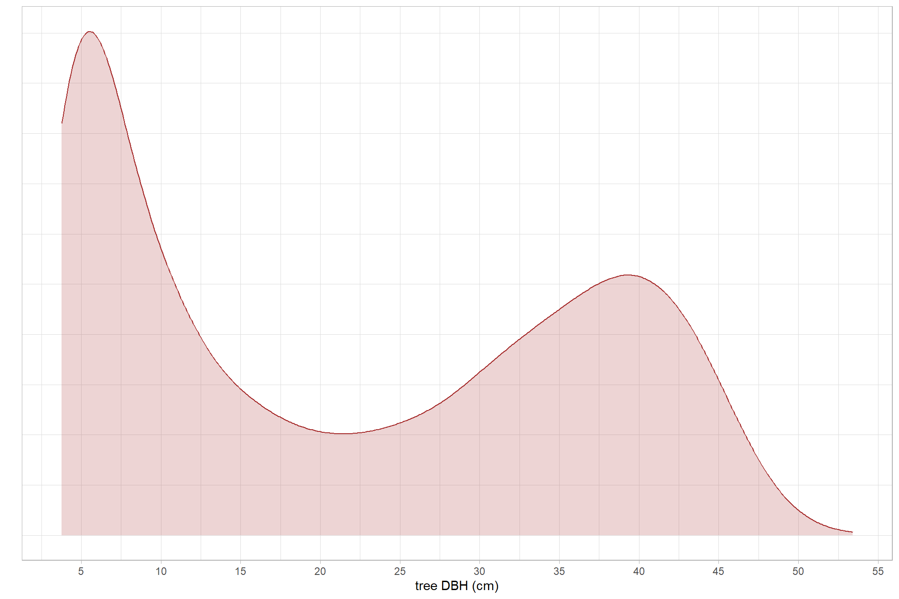
a two-aged stand
3.2.3.3 Processing Time
The cloud2trees() function dropped off a lot of additional data in a folder titled “point_cloud_processing_delivery” which is nested where we told the command to write the data (output_dir = "../data" parameter setting). Let’s load in the “processed_tracking_data.csv” file to see how long that cloud2trees() process took to run. Run times are, of course, dependent on computer processing and I am working on a laptop typical of a spatial analyst (especially outside of the US Federal Government) running Windows with an Intel i7-10750H 6-core computer processor unit and 32 gigabytes of random-access memory.
timer_df <-
c2t_output_dir %>%
file.path("point_cloud_processing_delivery", "processed_tracking_data.csv") %>%
readr::read_csv(show_col_types = F, progress = F) %>%
dplyr::mutate(
timer_total_time_mins = timer_cloud2raster_mins + timer_raster2trees_mins +
timer_trees_dbh_mins +
# timer_trees_cbh_mins +
timer_trees_type_mins
# timer_trees_hmd_mins +
# timer_trees_biomass_mins
, timer_tree_extraction_mins = timer_cloud2raster_mins + timer_raster2trees_mins
, points_per_m2 = number_of_points/las_area_m2
, timer_total_time_mins_per_ha = timer_total_time_mins/(las_area_m2/10000)
) %>%
dplyr::select(
-c(timer_trees_cbh_mins,timer_trees_hmd_mins, timer_trees_biomass_mins)
) %>%
dplyr::mutate(
dplyr::across(
.cols = c(timer_tree_extraction_mins,
timer_trees_dbh_mins
# , timer_trees_cbh_mins
, timer_trees_type_mins
# , timer_trees_hmd_mins
# , timer_trees_biomass_mins
)
, .fns = ~ .x/timer_total_time_mins
, .names = "{.col}_pct"
)
, dplyr::across(
.cols = c(timer_tree_extraction_mins,
timer_trees_dbh_mins
# , timer_trees_cbh_mins
, timer_trees_type_mins
# , timer_trees_hmd_mins
# , timer_trees_biomass_mins
)
, .fns = ~ paste0(scales::comma( (.x/(las_area_m2/10000)),accuracy=0.001), "<br>(", scales::percent( (.x/timer_total_time_mins), accuracy = 0.1 ), ")")
, .names = "{.col}_full_lab"
)
)
# timer_df %>% dplyr::glimpse()table the processing stats
timer_df %>%
dplyr::select(
number_of_points
, points_per_m2
# timer
, timer_total_time_mins_per_ha
, tidyselect::ends_with("_full_lab")
# , timer_tree_extraction_mins,
# timer_trees_dbh_mins, timer_trees_cbh_mins, timer_trees_type_mins,
# timer_trees_hmd_mins, timer_trees_biomass_mins
) %>%
dplyr::mutate(
desc = "UAS-DAP data"
, number_of_points = scales::comma((number_of_points/1000000),accuracy=0.1,suffix = " M")
, timer_total_time_mins_per_ha = scales::comma(timer_total_time_mins_per_ha,accuracy=0.001)
, dplyr::across(tidyselect::ends_with("_per_m2"), ~scales::comma(.x,accuracy = 1))
) %>%
dplyr::relocate(desc) %>%
# ncol()
# dplyr::glimpse()
kableExtra::kbl(
caption = "Data Processing Summary"
, col.names = c(
"."
# data desc
, "# points", "points m<sup>-2</sup>"
# timer
, "TOTAL"
, "tree<br/>extraction", "DBH", "forest<br/>type"
)
, escape = F
# , digits = 2
) %>%
kableExtra::kable_styling(font_size = 11) %>%
kableExtra::add_header_above(
c(
" "=1
, "Input Data<br/>Description" = 2
, "Processing Time<br/>minutes ha<sup>-1</sup>" = 4
)
, escape = F
) %>%
kableExtra::column_spec(c(1,3,7), border_right = TRUE, include_thead = TRUE) %>%
kableExtra::collapse_rows(columns = 1, valign = "top")| . | # points | points m-2 | TOTAL |
tree extraction |
DBH |
forest type |
|---|---|---|---|---|---|---|
| UAS-DAP data | 216.2 M | 757 | 0.847 |
0.701 (82.8%) |
0.144 (17.0%) |
0.002 (0.2%) |
let’s just use the extracted tree top spatial points since this is all we need for the ICO process
3.3 Manitou EF Forest Stand Summary
In this section we’ll process the point cloud-extracted tree list data using only trees within the stand boundary. When processing point cloud data with the objective for summarizing data within a forest stand, it is imperative to ensure that the point cloud extent completely covers and extends beyond the stand extent to avoid edge effects and tree artifacts.
3.3.1 Study area
load our stand boundary
# stands
stand_sf <-
sf::st_read("../data/N1_Boundary/N1_Boundary.shp", quiet = T) %>%
sf::st_transform(sf::st_crs(treetops_sf)) %>%
dplyr::rename_with(~tolower(stringr::str_replace_all(.x,"\\.", "_"))) %>%
dplyr::mutate(
stand_area_m2 = sf::st_area(.) %>% as.numeric()
, stand_area_ha = stand_area_m2/10000
, unit_name = "Manitou EF"
) %>%
dplyr::slice(1)
las_ctg_sf_temp <- sf::st_read(file.path(c2t_process_dir, "raw_las_ctg_info.gpkg"), quiet = T)let’s look at the point cloud bounds and stand unit boundary on a map
mapview::mapview(
las_ctg_sf_temp
, layer.name = "point cloud tile"
, color = "gray"
, lwd = 1
, alpha.regions = 0
, label = FALSE
, legend = FALSE
, popup = FALSE
) +
mapview::mapview(
stand_sf %>% dplyr::select(unit_name)
, color = "black"
, col.regions = "black"
, lwd = 2
, alpha.regions = 0
, layer.name = "stand bounds"
) we processed point cloud data well outside these stand bounds, nice.
let’s filter our point cloud-generated forest inventory tree list to keep only the trees within the unit boundary and we’ll also keep only trees that are >= 2 m in height
3.3.2 Silvicultural metrics
Let’s look at some common stand-level forestry metrics
### stand-level summaries
silv_metrics <-
treetops_sf %>%
sf::st_drop_geometry() %>%
# dplyr::filter(dbh_cm >= ostory_dbh_cm) %>%
dplyr::ungroup() %>%
dplyr::group_by(unit_name,stand_area_ha) %>%
dplyr::summarise(
n_trees = dplyr::n_distinct(treeID)
, mean_dbh_cm = mean(dbh_cm, na.rm = T)
, mean_tree_height_m = mean(tree_height_m, na.rm = T)
, loreys_height_m = sum(basal_area_m2*tree_height_m, na.rm = T) / sum(basal_area_m2, na.rm = T)
, basal_area_m2 = sum(basal_area_m2, na.rm = T)
, sum_dbh_cm_sq = sum(dbh_cm^2, na.rm = T)
) %>%
dplyr::ungroup() %>%
dplyr::mutate(
trees_per_ha = (n_trees/stand_area_ha)
, basal_area_m2_per_ha = (basal_area_m2/stand_area_ha)
, qmd_cm = sqrt(sum_dbh_cm_sq/n_trees)
) %>%
dplyr::select(-c(sum_dbh_cm_sq))stand-level silvicultural summary
silv_metrics %>%
dplyr::select(
unit_name
, stand_area_ha
, n_trees
, mean_dbh_cm
, qmd_cm
, mean_tree_height_m
, loreys_height_m
, trees_per_ha
, basal_area_m2_per_ha
) %>%
dplyr::mutate(
dplyr::across(
.cols = c(stand_area_ha)
, .fns = ~ scales::comma(.x, accuracy = .1)
)
, dplyr::across(
.cols = c(n_trees)
, .fns = ~ scales::comma(.x, accuracy = 1)
)
) %>%
kableExtra::kbl(
digits = 1
, escape = F
, caption = "Silvicultral metrics"
, col.names = c(
"Unit Name"
, "area (ha)"
, "trees"
, "mean<br>DBH (cm)"
, "QMD (cm)"
, "mean<br>Ht. (m)"
, "Loreys<br>Ht. (m)"
, "TPH"
, "BA<br>m<sup>2</sup> ha<sup>-1</sup>"
)
) %>%
kableExtra::kable_styling(font_size = 12)| Unit Name | area (ha) | trees |
mean DBH (cm) |
QMD (cm) |
mean Ht. (m) |
Loreys Ht. (m) |
TPH |
BA m2 ha-1 |
|---|---|---|---|---|---|---|---|---|
| Manitou EF | 9.3 | 3,406 | 24.3 | 28.6 | 12.5 | 18.8 | 366.5 | 23.5 |
3.3.2.1 Summary Statistics
let’s get summary statistics for selected metrics by stand unit
# table_temp =
treetops_sf %>%
sf::st_drop_geometry() %>%
dplyr::group_by(unit_name) %>%
dplyr::summarise(
dplyr::across(
c(tree_height_m, dbh_cm)
, .fns = list(mean = mean, median = median, sd = sd, min = min, max = max)
)
, n = dplyr::n()
) %>%
dplyr::ungroup() %>%
tidyr::pivot_longer(cols = -c(unit_name,n)) %>%
dplyr::mutate(
agg = stringr::word(name,-1,sep = "_")
, metric = stringr::str_remove_all(name, paste0("_",agg))
) %>%
dplyr::select(-name) %>%
dplyr::mutate(
value = dplyr::case_when(
metric == "tree_height_m" ~ scales::comma(value,accuracy=0.1)
, metric == "dbh_cm" ~ scales::comma(value,accuracy=0.1)
, metric == "tree_cbh_m" ~ scales::comma(value,accuracy=0.1)
, metric == "cruz_tree_kg_per_m3" ~ scales::comma(value,accuracy=0.001)
, metric == "landfire_tree_kg_per_m3" ~ scales::comma(value,accuracy=0.001)
, T ~ scales::comma(value,accuracy=0.1)
)
) %>%
tidyr::pivot_wider(names_from = agg, values_from = value) %>%
dplyr::mutate(
unit_lab = paste0(
unit_name
,"<br>("
, scales::comma(n,accuracy=1)
," trees)"
)
, range = paste0(min, "—", max)
) %>%
dplyr::arrange( unit_name, desc(n)) %>%
dplyr::select(-c(unit_name,n,min,max)) %>%
dplyr::relocate(unit_lab) %>%
dplyr::mutate(
metric = factor(
metric
, ordered = T
, levels = c(
"tree_height_m"
, "tree_cbh_m"
, "dbh_cm"
, "cruz_tree_kg_per_m3"
, "landfire_tree_kg_per_m3"
)
, labels = c(
"Height (m)"
, "Crown Base Ht. (m)"
, "DBH (cm)"
, "Cruz CBD<br>kg m<sup>-3</sup>"
, "LANDFIRE CBD<br>kg m<sup>-3</sup>"
)
)
) %>%
kableExtra::kbl(
caption = "Summary statistics for selected metrics by stand"
, col.names = c(
"Unit Name", "Metric"
, "Mean", "Median"
, "Std Dev", "Range"
)
, escape = F
# , digits = 2
) %>%
kableExtra::kable_styling(font_size = 13) %>%
kableExtra::collapse_rows(columns = 1, valign = "top")| Unit Name | Metric | Mean | Median | Std Dev | Range |
|---|---|---|---|---|---|
|
Manitou EF (3,406 trees) |
Height (m) | 12.5 | 13.7 | 7.2 | 2.0—26.2 |
| DBH (cm) | 24.3 | 26.4 | 15.0 | 3.8—52.6 |
3.3.2.2 Height Distribution
# there are always tree heights
treetops_sf %>%
ggplot2::ggplot(mapping = ggplot2::aes(x = tree_height_m)) +
ggplot2::geom_density(alpha = 0.7, color = "plum4", fill = "plum4") +
ggplot2::scale_x_continuous(breaks = scales::breaks_extended(11)) +
ggplot2::labs(x = "tree ht. (m)", y = "", subtitle = "Distribution of tree height") +
ggplot2::theme_light() +
ggplot2::theme(
legend.position = "none"
, axis.text.y = ggplot2::element_blank()
, axis.ticks.y = ggplot2::element_blank()
, strip.text = ggplot2::element_text(color = "black", size = 10)
)
another common thing to look at are binned height distributions
# make ggplot2::cut_* bins pretty
make_bins_pretty <- function(bin_factor, suffix = "") {
# convert factor to character and remove brackets and parens
clean_labels <- bin_factor %>%
as.character() %>%
stringr::str_replace_all(c("\\[" = "", "\\(" = "", "\\]" = "", "\\)" = "")) %>%
stringr::str_replace(",", "-")
# suffix
if(stringr::str_squish(suffix) != "" && inherits(suffix,"character")){
clean_labels <- stringr::str_c(clean_labels, " ", suffix) %>% stringr::str_squish()
}
# reorder based on the original factor levels
forcats::fct_reorder(factor(clean_labels), as.numeric(bin_factor))
}
# plot
treetops_sf %>%
sf::st_drop_geometry() %>%
dplyr::select(stand_area_ha,tree_height_m) %>%
# metric cuts/bins
dplyr::mutate(
tree_height_m_bin = ggplot2::cut_width(tree_height_m, width = 4, boundary = 0) %>%
make_bins_pretty(suffix = "m") %>% # pretty that
forcats::fct_relabel(~ stringr::str_replace(.x, "^0-", paste0(my_tree_ht_m,"-")) )
) %>%
dplyr::count(stand_area_ha,tree_height_m_bin) %>%
dplyr::ungroup() %>%
dplyr::group_by(stand_area_ha) %>%
dplyr::mutate(
pct = n/sum(n)
# , pct_lab = scales::percent(pct,accuracy=0.1)
, tph = n/stand_area_ha
, lab = paste0(scales::comma(tph,accuracy=1), "\n",scales::percent(pct,accuracy=1) )
) %>%
dplyr::ungroup() %>%
# dplyr::glimpse()
ggplot2::ggplot(
mapping = ggplot2::aes(y = tph, x = tree_height_m_bin)
) +
ggplot2::geom_col(
width = 0.6
, color = NA, alpha = 0.8
, fill = "plum4"
) +
ggplot2::geom_text(
mapping = ggplot2::aes(label = lab)
, color = "black", size = 2.5, vjust = -0.2
) +
ggplot2::scale_x_discrete(drop = F) +
ggplot2::scale_y_continuous(
# breaks = seq(0,1,by=0.2)
labels = scales::comma
, expand = ggplot2::expansion(mult = c(0,0.1))
) +
ggplot2::labs(
x = "height", y = "TPH"
, subtitle = "Trees per hectare by height bin"
) +
ggplot2::theme_light() +
ggplot2::theme(
legend.position = "none"
, strip.text = ggplot2::element_text(size = 11, color = "black", face = "bold")
, axis.text.x = ggplot2::element_text(size = 9, angle = 45, hjust = 1, vjust = 1)
# , axis.text.x = ggplot2::element_text(size = 12)
# , axis.text.y = ggplot2::element_blank()
# , axis.ticks.y = ggplot2::element_blank()
)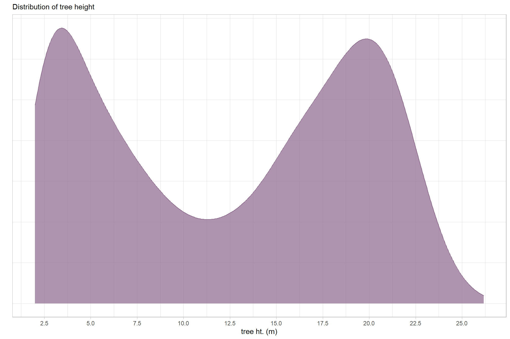
3.3.2.3 DBH Distribution
treetops_sf %>%
ggplot2::ggplot(mapping = ggplot2::aes(x = tree_height_m)) +
ggplot2::geom_density(alpha = 0.7, color = "steelblue", fill = "steelblue") +
ggplot2::scale_x_continuous(breaks = scales::breaks_extended(11)) +
ggplot2::labs(x = "tree DBH (cm)", y = "", subtitle = "Distribution of tree DBH") +
ggplot2::theme_light() +
ggplot2::theme(
legend.position = "none"
, axis.text.y = ggplot2::element_blank()
, axis.ticks.y = ggplot2::element_blank()
, strip.text = ggplot2::element_text(color = "black", size = 10)
)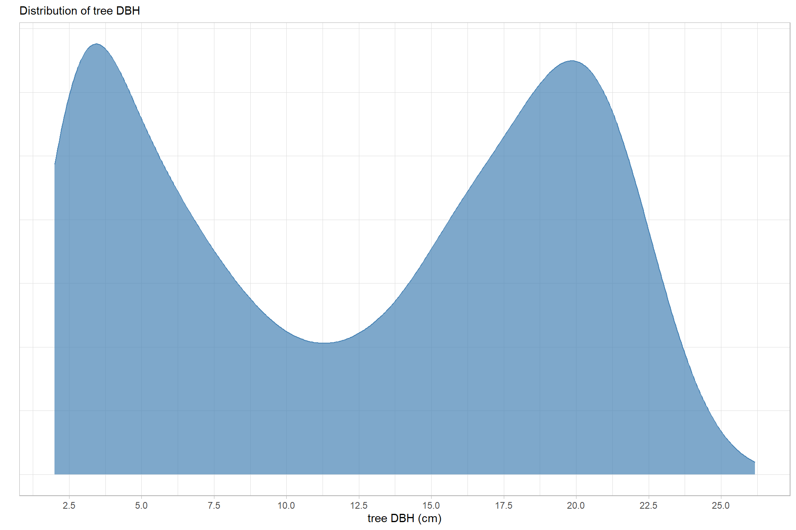
another common thing to look at are binned DBH distributions
# plot
treetops_sf %>%
sf::st_drop_geometry() %>%
dplyr::select(stand_area_ha,dbh_cm) %>%
# metric cuts/bins
dplyr::mutate(
dbh_cm_bin = ggplot2::cut_width(dbh_cm, width = 8, boundary = 0) %>%
make_bins_pretty(suffix = "cm") %>% # pretty that
forcats::fct_relabel(~ stringr::str_replace(.x, "^0-", paste0( floor(min(treetops_sf$dbh_cm)) ,"-")) )
) %>%
dplyr::count(stand_area_ha,dbh_cm_bin) %>%
dplyr::ungroup() %>%
dplyr::group_by(stand_area_ha) %>%
dplyr::mutate(
pct = n/sum(n)
# , pct_lab = scales::percent(pct,accuracy=0.1)
, tph = n/stand_area_ha
, lab = paste0(scales::comma(tph,accuracy=1), "\n",scales::percent(pct,accuracy=1) )
) %>%
dplyr::ungroup() %>%
# dplyr::glimpse()
ggplot2::ggplot(
mapping = ggplot2::aes(y = tph, x = dbh_cm_bin)
) +
ggplot2::geom_col(
width = 0.6
, color = NA, alpha = 0.8
, fill = "steelblue"
) +
ggplot2::geom_text(
mapping = ggplot2::aes(label = lab)
, color = "black", size = 2.5, vjust = -0.2
) +
ggplot2::scale_x_discrete(drop = F) +
ggplot2::scale_y_continuous(
# breaks = seq(0,1,by=0.2)
labels = scales::comma
, expand = ggplot2::expansion(mult = c(0,0.1))
) +
ggplot2::labs(
x = "DBH", y = "TPH"
, subtitle = "Trees per hectare by DBH bin"
) +
ggplot2::theme_light() +
ggplot2::theme(
legend.position = "none"
, strip.text = ggplot2::element_text(size = 11, color = "black", face = "bold")
, axis.text.x = ggplot2::element_text(size = 9, angle = 45, hjust = 1, vjust = 1)
# , axis.text.x = ggplot2::element_text(size = 12)
# , axis.text.y = ggplot2::element_blank()
# , axis.ticks.y = ggplot2::element_blank()
)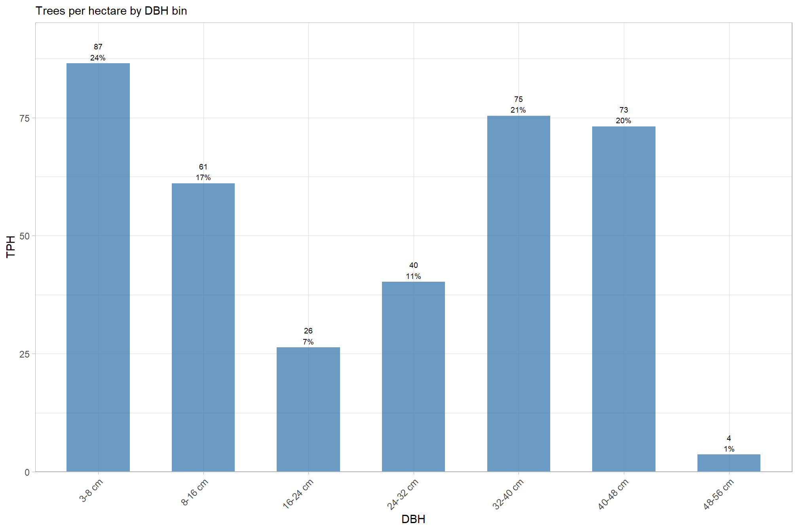
3.3.2.4 Forest Type
The cloud2trees::trees_type() function was used in our point cloud processing pipeline to attach FIA Forest Type Group Code information using the Forest Type Groups of the Continental United States data (Wilson 2023).
let’s check out the distribution of forest type groups overall across units
treetops_sf %>%
sf::st_drop_geometry() %>%
dplyr::count(forest_type_group) %>%
dplyr::arrange(desc(n)) %>%
dplyr::mutate(
pct = scales::percent(n/sum(n), accuracy = 0.1)
) %>%
dplyr::mutate(n = scales::comma(n,accuracy=1)) %>%
kableExtra::kbl(
caption = "Count of trees by FIA Forest Type Group overall"
, digits = 2
, col.names = c(
""
, "# trees"
, "% trees"
)
) %>%
kableExtra::kable_styling()| # trees | % trees | |
|---|---|---|
| Ponderosa pine group | 3,406 | 100.0% |
nice, that is what we expect for this stand
3.3.3 Spatial Forest Structure
Because we have a spatial tree list, we can look at the spatial arrangement of trees and their size
let’s look at the tree points colored by height
treetops_sf %>%
ggplot2::ggplot() +
ggplot2::geom_sf(
data = stand_sf
, color = "black", fill = NA
) +
ggplot2::geom_sf(
mapping = ggplot2::aes(color = tree_height_m)
, size = 3, alpha = 0.8
) +
ggplot2::scale_color_distiller(palette = "YlOrBr", direction = 1, name = "Height (m)") +
ggplot2::theme_void() +
ggplot2::theme(legend.position = "top", legend.title = ggplot2::element_text(size=7)) 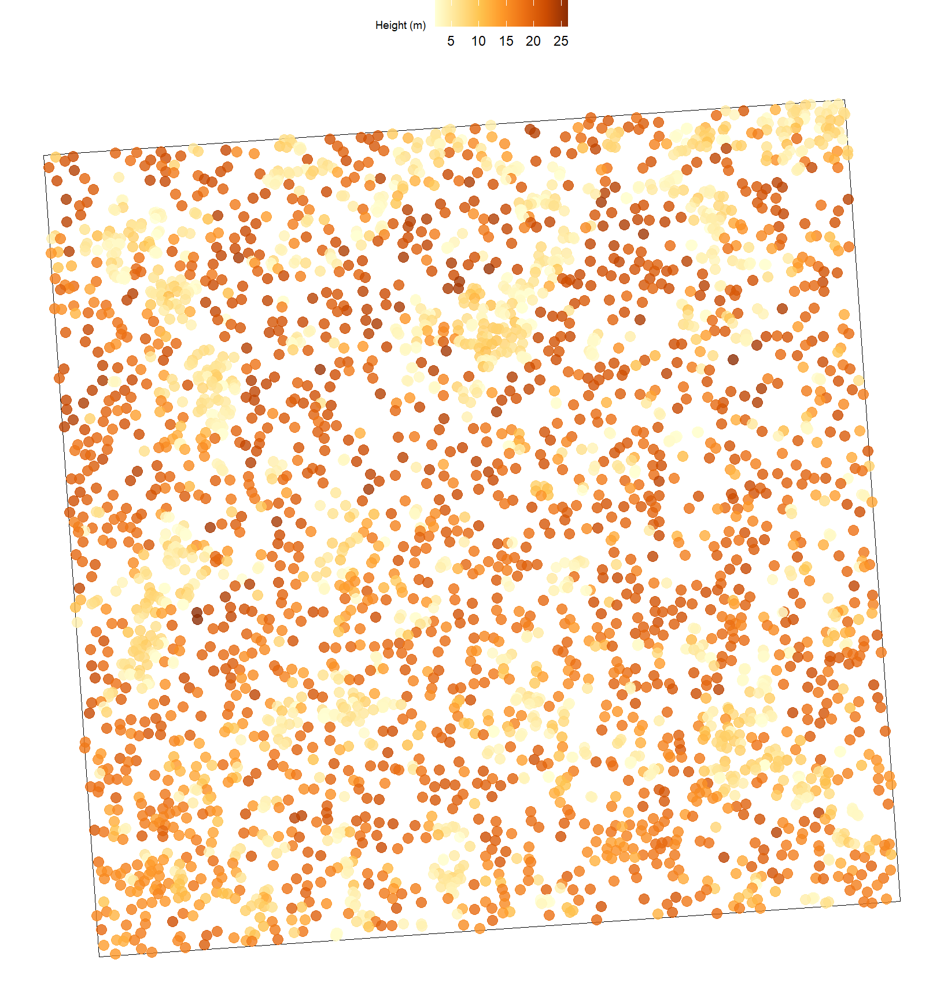
there are clearly patches of smaller trees that have filled-in the space between groups of larger trees
a fun thing to do is to overlay the tree points on the CHM. we used a fine-resolution raster for ITD but here we’ll smooth out the CHM and make contours based on heights to make it look more continuous which should help us see the patches of taller and smaller trees…let’s try it out
# load the chm since we may have dropped it
chm_temp <- terra::rast(file.path(c2t_process_dir, "chm_0.25m.tif"))
agg_chm_temp <-
chm_temp %>%
terra::aggregate(
fact = round(1/terra::res(chm_temp)[1])
, fun = "mean", na.remove = T
)
# interpolate na areas to give appearance of smooth contours
chm_contour_df <-
terra::interpIDW(
x = terra::init(agg_chm_temp, fun = NA)
, y = terra::as.points(agg_chm_temp,na.rm = T)
, field = names(agg_chm_temp)[1]
, radius = 20 # set big so no missing
) %>%
# terra::plot()
# smooth
terra::focal(w = 7, fun = "mean", na.policy = "omit", na.rm = T) %>%
# terra::plot()
terra::crop(
stand_sf %>% sf::st_buffer(2) %>% terra::vect()
, mask = T
) %>%
terra::as.data.frame(xy=T) %>%
dplyr::rename(f=3)
# plot
plt_ht_contour <-
chm_contour_df %>%
# plt
ggplot2::ggplot() +
# contour bands
ggplot2::geom_contour_filled(
mapping = ggplot2::aes(x = x, y = y, z = f)
, breaks = seq(my_tree_ht_m, ceiling(max(treetops_sf$tree_height_m)), length.out = 9)
, alpha = 0.3
) +
# contour lines
ggplot2::geom_contour(
mapping = ggplot2::aes(x = x, y = y, z = f)
, breaks = seq(my_tree_ht_m, ceiling(max(treetops_sf$tree_height_m)), length.out = 9)
, color = "gray90"
, lwd = 0.05
) +
ggplot2::geom_sf(
data = stand_sf
, color = "black", fill = NA
, lwd = 1.2
) +
ggplot2::scale_fill_brewer(
palette = "YlOrBr"
# , limits = c(my_tree_ht_m, ceiling(max(treetops_sf$tree_height_m)*1.02) )
, direction = 1
, name = "Height (m)"
, guide = "none"
) +
ggplot2::scale_x_continuous(expand = c(0, 0)) +
ggplot2::scale_y_continuous(expand = c(0, 0)) +
ggplot2::labs(
x = ""
, y = ""
, subtitle = "" #my_title
) +
ggplot2::theme_void() +
ggplot2::theme(
legend.position = "top" # c(0.5,1)
, legend.direction = "horizontal"
, legend.margin = ggplot2::margin(0,0,0,0)
, legend.title= ggplot2::element_text(size=8, face = "bold")
, legend.text= ggplot2::element_text(size = 7)
, legend.key = ggplot2::element_rect(fill = NA, color = NA)
, plot.subtitle = ggplot2::element_text(size = 10, hjust = 0.5, face = "bold")
)
# plt_ht_contour
# add trees
plt_ht_contour_trees <-
plt_ht_contour +
ggplot2::geom_sf(
data = treetops_sf
, mapping = ggplot2::aes(color = tree_height_m)
, size = 1.1, alpha = 0.8
) +
ggplot2::scale_color_distiller(
palette = "YlOrBr"
, limits = c(my_tree_ht_m, ceiling(max(treetops_sf$tree_height_m)*1.02) )
, direction = 1
, name = "Height (m)"
)
plt_ht_contour_trees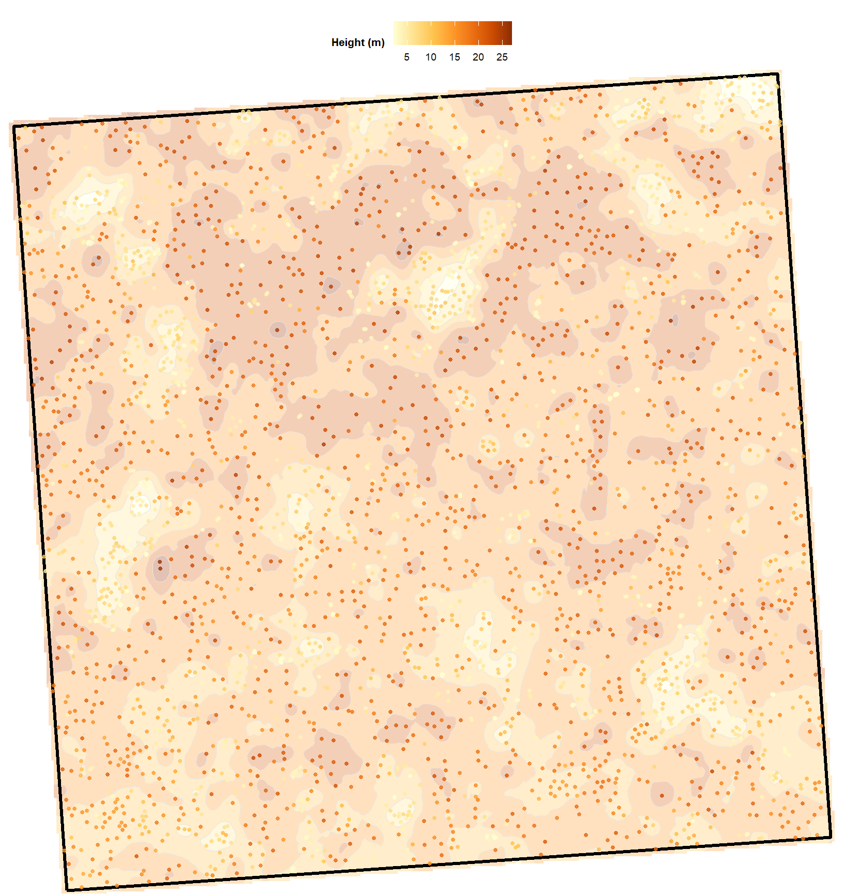
that helps to make the small tree and tall tree groups stand out visually. neat.
3.4 Manitou EF ICO Prescription
let’s use the spatial tree list inventory for implementing the Individuals, Clumps, and Openings (ICO) method defined by Churchill et al. (2016) to generate a cut-retention prescription. The trees2ico package and workflow determines which trees to ‘cut’ or ‘keep’ based on stand-level targets for basal area and specific clump size proportions.
load the trees2ico package which was developed specifically for this use-case
## remotes helps us get packages hosted on github
install.packages("remotes")
## get trees2ico
remotes::install_github(repo = "georgewoolsey/trees2ico", upgrade = F)3.4.1 Define Targets
in order to define our basal area and tree clump group proportion targets, we need to know the current conditions. let’s use some trees2ico helper functions to get the current conditions
first, we’ll define our distance in meters to separate tree clump groupings. See Churchill et al. (2016) Figure 4 (p.10) and Matonis and Binkley (2018) who “calculated coverage of mosaic-meadows (percentage of stand > 6 m from overstory trees)” (p. 124)
Churchill et al. (2016) define tree clumps:
The definition of a tree clump is based on the average inter-tree distance at which mature/old trees of the dominant leave tree species have clearly interlocking crowns and form patches of contiguous canopy. This distance can vary from 15 to 22 feet (4.57 to 6.71 m), depending on site productivity of the stand. The ICO method requires that a single distance be used to define and identify clumps in the field. A default distance of 20 feet (6.1 m) is recommended for dry forests dominated by ponderosa pine and Douglas-fir. Trees are members of the same clump if they are within this distance of at least one other tree in the clump. (p.11)
my_clump_dist_m <- 6
ico_clumps_temp <- trees2ico:::get_ico_clumps(treetops_sf, clump_dist_m = my_clump_dist_m)
# huh?
names(ico_clumps_temp)## [1] "clump_polys" "tree_list"this gave us the tree list with clumps defined using a maximum distance between trees for determining tree clumps of 6.0 m which is based on the approximate crown radius of a typical, mature overstory tree. Churchill et al. (2016) provide instructions for implementing the clump identification (Plotkin et al. 2002) in ArcGIS:
Use the Buffer tool (in the Proximity toolset within the Analysis toolbox) to create a buffer of distance \(d/2\), one half the inter-tree distance, around each point. This quantity \(d/2\) is meant to approximate the crown radius of a “typical” overstory tree. Set the Dissolve Type option to ALL, which dissolves overlapping buffers, creating a reduced set of spatially non-overlapping polygons stored as a multipart polygon feature…Sanchez Meador et al. (2011) provide some useful examples of how clump attributes can be summarized…The method described here can be modified to use measured or modeled crown radii for each tree in place of \(d/2\) (p.36)
with respect to clump size groupings, Churchill et al. (2016) note that:
Proportions for clump sizes should be lumped into four or five bins for operational simplicity. We use 4 or 5 bins (Fig 5): individual trees, small clumps (2-4 trees), medium clumps (5-9 trees), and large clumps (10-20+ trees). Note that when instructed to leave a large clump (e.g. 10-20 trees), marking crews often have difficulty leaving the upper end of the size range (e.g. an 18, 19, or 20 tree clump). Thus adding a fifth bin for “super clumps” may be necessary (e.g. 15-20 trees or 20-25+ trees), especially if the upper size range of clumps is desired. (p. 12-13)
trees2ico implements these group sizes by default
ico_clumps_temp$tree_list %>%
dplyr::pull(clump_n_trees_grp) %>%
# get factor levels in case there aren't any represented in our tree list
levels()## [1] "Individual" "2-4 trees" "5-9 trees" "10-15 trees" ">15 trees"use another trees2ico helper function to see the current distribution of trees by clump size in our data as well as the BA
agg_stand_clumps_temp <-
ico_clumps_temp %>%
purrr::pluck("tree_list") %>%
# get rid of columns we use as param
dplyr::select( -dplyr::any_of(c(
"hey_xxxxxxxxxx"
, "stand_area_ha"
))) %>%
trees2ico:::agg_stand_clumps(
stand_area_ha = stand_sf$stand_area_ha
)current (pre-treatment) distribution of trees by clump size
agg_stand_clumps_temp$props %>%
dplyr::mutate(
count=scales::comma(count,accuracy=1)
, prop=scales::percent(prop,accuracy=0.1)
) %>%
kableExtra::kbl(
caption = "current (pre-treatment) group size tree distribution"
, col.names = c(
"group size","# trees","% trees"
)
) %>%
kableExtra::kable_styling()| group size | # trees | % trees |
|---|---|---|
| Individual | 66 | 1.9% |
| 2-4 trees | 159 | 4.7% |
| 5-9 trees | 204 | 6.0% |
| 10-15 trees | 155 | 4.6% |
| >15 trees | 2,822 | 82.9% |
what about BA?
print(paste(
"current stand BA:"
, scales::comma(agg_stand_clumps_temp$stats$ba_m2_ha, accuracy = 0.1)
, "m2/ha"
))## [1] "current stand BA: 23.5 m2/ha"For setting the stand average density target, Churchill et al. (2016) note:
An average BA, TPA, or SDI target for the stand should be selected that is appropriate for the species, structure, site conditions, and management objectives. Expected mortality from prescribed fire should be factored in. Stand average targets can come from historical reference stands, plant association based stocking guides, density management tools, or a combination of both (see Franklin et al. (2013) for a full discussion of setting density targets). (p.11)
the trees2ico package requires a stand average basal area (BA) target in square meters per hectare since BA is commonly used in silvicultural managment and widely represented in the research on historical reference conditions.
starting from the current clump size proportions and basal area, we’ll set targets for our ICO prescription based on historical reference conditions. Churchill et al. (2016) suggest the following:
In some cases, reference spatial information may already be available and summarized in a way that it can be directly incorporated into ICO prescriptions. Such data exist and have been published for areas in Arizona (Abella and Denton 2009, Sánchez Meador et al. 2011), the eastern Washington Cascades (Churchill et al. 2013), the northern Rockies (Larson et al. 2012), and the Sierra Nevada (Lydersen et al. 2013). Reference datasets for using ICO in other forest types, such as coastal Douglas-fir or Pacific silver fir, also exist (Larson and Churchill 2008). (p.28)
relevant research for our study area and forest type includes:
define 3 target scenarios
ico_targets_df <-
levels(ico_clumps_temp$tree_list$clump_n_trees_grp) %>%
dplyr::as_tibble() %>%
dplyr::rename(clump_n_trees_grp = 1) %>%
dplyr::mutate(
clump_n_trees_grp = ordered(clump_n_trees_grp, levels = levels(ico_clumps_temp$tree_list$clump_n_trees_grp))
) %>%
tidyr::uncount(3, .id = "scenario_id") %>%
dplyr::arrange(scenario_id, clump_n_trees_grp) %>%
dplyr::bind_cols(
# scenarios
dplyr::bind_rows(
dplyr::tibble(
scenario_desc = "Low Clumping (Churchill et al. 2013)" # all trees >15 cm dbh were mapped...The 15 cm cutoff was based on a commercial thinning minimum diameter threshold.
, target_props = c(0.42, 0.37, 0.16, 0.05, 0.0)
, target_ba_m2_ha = 15
)
, dplyr::tibble(
scenario_desc = "Moderate Clumping (Ziegler et al. 2017)"
, target_props = c(
median(c(0.27,0.25,0.28,0.36,0.51,0.14,0.58))
, median(c(0.38,0.36,0.37,0.35,0.24,0.28,0.42))
, median(c(0.25,0.30,0.25,0.16,0.12,0.27,0.0))
, 0.0 # median(c(0.11,0.10,0.06,0.08,0.12,0.15,0.0))
, 0.0
)
, target_ba_m2_ha = median(c(14.5,19.7,10.6,9.5,9.0,17.6,7.5))
) %>%
dplyr::mutate(
target_props = ifelse(
dplyr::row_number() == 4
, (1 - sum(target_props))
, target_props
)
)
, dplyr::tibble(
scenario_desc = "High Clumping (Churchill et al. 2016 [Malheur])"
, target_props = c(0.15, 0.25, 0.25, 0.1, 0.25)
, target_ba_m2_ha = 21
)
)
) %>%
# set a constant BA target?
# Brown et al. (2015): 25% q = 14.8, mean = 16.7; 75% q = 21.5
# Ziegler et al. 2017: median(c(14.5,19.7,10.6,9.5,9.0,17.6,7.5))
dplyr::mutate(
target_ba_m2_ha = median(c(14.5,19.7,10.6,9.5,9.0,17.6,7.5))
, scenario_desc_fact = scenario_desc %>%
stringr::str_extract("^.*?(?=\\()") %>%
stringr::str_squish() %>%
forcats::fct_inorder()
# , huh = as.numeric(scenario_desc_fact)
)
# dplyr::glimpse(ico_targets_df)We set the same BA target of 10.6 square meters per hectare for all of these scenarios. This target was based on post-treatment Ziegler et al. (2017) outcomes on sites that had been treated across the Colorado Plateau and southern Rocky Mountains (matching our demonstration site) with the expressed treatment goals of restoring forest structural patterns and potential fire behavior akin to historic ranges.
what are the 3 target scenarios we defined?
ico_targets_df %>%
dplyr::select(scenario_desc, clump_n_trees_grp, target_props) %>%
dplyr::mutate(target_props = scales::percent(target_props,accuracy=1)) %>%
tidyr::pivot_wider(names_from = clump_n_trees_grp, values_from = target_props) %>%
dplyr::mutate(scenario_desc = scenario_desc %>% stringr::str_replace("lumping \\(","lumping<br />\\(")) %>%
dplyr::rename(scenario=scenario_desc) %>%
kableExtra::kbl(
caption = paste0(
"ICO Scenarios: target proportion of trees in different sized clumps"
, "<br />"
, "Target BA for all: "
, scales::comma( max(ico_targets_df$target_ba_m2_ha), accuracy = 0.1 )
, " m<sup>2</sup> ha<sup>-1</sup>"
, " (Ziegler et al. 2017)"
)
, escape = F
# , digits = 2
) %>%
kableExtra::kable_styling() | scenario | Individual | 2-4 trees | 5-9 trees | 10-15 trees | >15 trees |
|---|---|---|---|---|---|
|
Low Clumping (Churchill et al. 2013) |
42% | 37% | 16% | 5% | 0% |
|
Moderate Clumping (Ziegler et al. 2017) |
28% | 36% | 25% | 11% | 0% |
|
High Clumping (Churchill et al. 2016 [Malheur]) |
15% | 25% | 25% | 10% | 25% |
plot this
pal_clump_grp <-
levels(ico_clumps_temp$tree_list$clump_n_trees_grp) %>%
length() %>%
harrypotter::hp(option = "Always") %>%
setNames(
levels(ico_clumps_temp$tree_list$clump_n_trees_grp) %>%
as.character()
)
# names(pal_clump_grp)
# scales::show_col(pal_clump_grp)
ico_targets_df %>%
dplyr::select(scenario_desc_fact, clump_n_trees_grp, target_props) %>%
dplyr::mutate(
target_props_lab = scales::percent(ifelse(target_props>=0.08,target_props,NA), accuracy = 1)
, scenario_desc_fact = forcats::fct_rev(scenario_desc_fact)
, clump_n_trees_grp = forcats::fct_rev(clump_n_trees_grp)
, huh = ifelse(
clump_n_trees_grp %in% c(">15 trees","10-15 trees")
, "white"
, "black"
)
) %>%
ggplot2::ggplot(
mapping = ggplot2::aes(x = target_props, y = scenario_desc_fact, fill=clump_n_trees_grp, group=clump_n_trees_grp)
) +
ggplot2::geom_col(
width = 0.7, alpha=0.95
) +
ggplot2::geom_text(
mapping = aes(
label = target_props_lab
, color = huh
, fontface = "bold"
)
, position = ggplot2::position_stack(vjust = 0.5)
# , color = "black"
, size = 4
) +
ggplot2::scale_fill_manual(values = pal_clump_grp) +
ggplot2::scale_color_identity() +
ggplot2::scale_x_continuous(labels = scales::percent_format()) +
ggplot2::labs(
fill = "clump\nsize"
, y = ""
, x = "target proportion of trees in different sized clumps"
# , subtitle = ""
) +
ggplot2::theme_light() +
ggplot2::theme(
legend.position = "top"
, legend.direction = "horizontal"
, legend.title = element_text(size=7)
, axis.title.x = element_text(size=10, face = "bold")
, axis.text.x = element_blank()
, axis.ticks.x = element_blank()
, axis.text.y = ggplot2::element_text(size = 9, face = "bold")
) +
ggplot2::guides(
fill = ggplot2::guide_legend(
# nrow = 2, byrow = T,
reverse = T
# , override.aes = list(alpha = 0.9)
)
)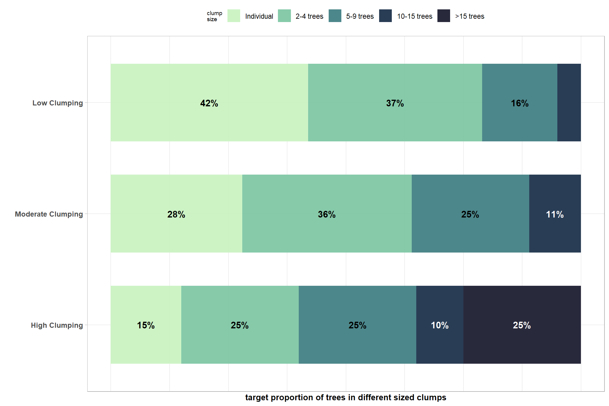
3.4.2 Get ICO Prescription
let’s get the ICO prescrition for each of these target scenarios. We’ll use the trees2ico package which uses a spatial tree list that includes DBH measurements in (cm) to generate a cut-retention prescription. It determines which trees to ‘cut’ or ‘keep’ based on stand-level targets for basal area and specific clump size proportions
# outdir
ico_output_dir <- file.path(c2t_output_dir,"ico_prescriptions")
if(!dir.exists(ico_output_dir)) dir.create(ico_output_dir)
##############################################################
# map over the scenarios
##############################################################
trees2ico_ans_list <-
unique(ico_targets_df$scenario_id) %>%
purrr::set_names() %>%
purrr::map(function(x){
# fnms
fnm_tree_list <- file.path(ico_output_dir, paste0("tree_list_scenario_",x,".gpkg") )
fnm_pre_cut_clumps <- file.path(ico_output_dir, paste0("pre_cut_clumps_scenario_",x,".gpkg") )
fnm_post_cut_clumps <- file.path(ico_output_dir, paste0("post_cut_clumps_scenario_",x,".gpkg") )
if(
!file.exists( fnm_tree_list )
|| !file.exists( fnm_pre_cut_clumps )
|| !file.exists( fnm_post_cut_clumps )
){
# trees2ico
trees2ico_ans <- trees2ico::trees2ico(
tree_list = treetops_sf %>%
dplyr::select( -dplyr::any_of(c(
"hey_xxxxxxxxxx"
, "stand_area_ha"
)))
, target_clump_props = ico_targets_df %>%
dplyr::filter(scenario_id==x) %>%
dplyr::arrange(clump_n_trees_grp) %>%
dplyr::pull(target_props)
, target_ba_m2_ha = ico_targets_df %>%
dplyr::filter(scenario_id==x) %>%
dplyr::slice_max(order_by = target_ba_m2_ha, with_ties = F, na_rm = T) %>%
dplyr::pull(target_ba_m2_ha)
, clump_dist_m = my_clump_dist_m
, stand_area_ha = stand_sf$stand_area_ha[1]
)
# write
trees2ico_ans$tree_list %>% sf::st_write( fnm_tree_list, append = F, quiet = T )
trees2ico_ans$pre_cut_clumps %>% sf::st_write( fnm_pre_cut_clumps, append = F, quiet = T )
trees2ico_ans$post_cut_clumps %>% sf::st_write( fnm_post_cut_clumps, append = F, quiet = T )
# return
return(trees2ico_ans)
}else{
return(list(
"tree_list" = sf::st_read( fnm_tree_list, quiet =T ) %>%
dplyr::mutate(
pre_clump_n_trees_grp = factor(
pre_clump_n_trees_grp
, ordered = T
, levels = names(pal_clump_grp) # c("Individual", "2-4 trees", "5-9 trees", "10-15 trees", ">15 trees")
)
, post_clump_n_trees_grp = factor(
post_clump_n_trees_grp
, ordered = T
, levels = names(pal_clump_grp) # c("Individual", "2-4 trees", "5-9 trees", "10-15 trees", ">15 trees")
)
)
, "pre_cut_clumps" = sf::st_read( fnm_pre_cut_clumps, quiet =T ) %>%
dplyr::mutate(
clump_n_trees_grp = factor(
clump_n_trees_grp
, ordered = T
, levels = names(pal_clump_grp) # c("Individual", "2-4 trees", "5-9 trees", "10-15 trees", ">15 trees")
)
)
, "post_cut_clumps" = sf::st_read( fnm_post_cut_clumps, quiet =T ) %>%
dplyr::mutate(
clump_n_trees_grp = factor(
clump_n_trees_grp
, ordered = T
, levels = names(pal_clump_grp) # c("Individual", "2-4 trees", "5-9 trees", "10-15 trees", ">15 trees")
)
)
))
}
})what did we get back?
## [1] "tree_list" "pre_cut_clumps" "post_cut_clumps"let’s look at the tree_list object
trees2ico_ans_list[[1]] %>%
purrr::pluck("tree_list") %>%
sf::st_drop_geometry() %>%
dplyr::select(
treeID, tree_height_m, dbh_cm
# cols that trees2ico::trees2ico says it created in the help file
, is_keep_tree
, pre_clump_id
, pre_clump_n_trees
, pre_clump_n_trees_grp
, post_clump_id
, post_clump_n_trees
, post_clump_n_trees_grp
) %>%
dplyr::glimpse()## Rows: 3,406
## Columns: 10
## $ treeID <chr> "1817_490293.4_4330919.4", "1823_490282.9_43309…
## $ tree_height_m <dbl> 4.617, 3.716, 7.235, 3.745, 5.654, 11.726, 7.02…
## $ dbh_cm <dbl> 7.740669, 6.263601, 12.514383, 6.322647, 9.5168…
## $ is_keep_tree <lgl> FALSE, TRUE, FALSE, FALSE, FALSE, FALSE, FALSE,…
## $ pre_clump_id <int> 174, 174, 174, 174, 174, 174, 174, 174, 128, 12…
## $ pre_clump_n_trees <int> 67, 67, 67, 67, 67, 67, 67, 67, 61, 61, 67, 67,…
## $ pre_clump_n_trees_grp <ord> >15 trees, >15 trees, >15 trees, >15 trees, >15…
## $ post_clump_id <int> NA, 626, NA, NA, NA, NA, NA, NA, NA, 629, NA, 6…
## $ post_clump_n_trees <int> NA, 10, NA, NA, NA, NA, NA, NA, NA, 1, NA, 10, …
## $ post_clump_n_trees_grp <ord> NA, 10-15 trees, NA, NA, NA, NA, NA, NA, NA, In…3.4.3 Pre- and Post-Treatment Summary
compare the pre- and post-treatment proportion of trees in different sized clumps
trees2ico_ans_trees_df <-
trees2ico_ans_list %>%
purrr::map(~purrr::pluck(.x,"tree_list")) %>%
purrr::list_rbind(names_to = "scenario_id") %>%
dplyr::mutate(
scenario_id = as.numeric(scenario_id)
,cut_leave = ifelse(is_keep_tree, "leave", "cut") %>% ordered()
) %>%
dplyr::inner_join(
ico_targets_df %>%
dplyr::distinct(scenario_id, scenario_desc_fact)
, by = "scenario_id"
) %>%
sf::st_set_geometry("geom")
# count props
pre_post_temp <-
dplyr::bind_rows(
# get pre-treatment
dplyr::distinct(ico_targets_df, clump_n_trees_grp, scenario_desc_fact) %>%
dplyr::left_join(
trees2ico_ans_trees_df %>%
sf::st_drop_geometry() %>%
dplyr::group_by(scenario_desc_fact,pre_clump_n_trees_grp) %>%
dplyr::summarise(
basal_area_m2_per_ha=sum(basal_area_m2)/stand_sf$stand_area_ha
, trees = dplyr::n()
, .groups = "drop"
) %>%
dplyr::ungroup() %>%
dplyr::rename(clump_n_trees_grp=pre_clump_n_trees_grp)
, by = dplyr::join_by(clump_n_trees_grp, scenario_desc_fact)
) %>%
dplyr::group_by(scenario_desc_fact) %>%
dplyr::mutate(
trees = dplyr::coalesce(trees,0)
, pct_trees = trees/sum(trees,na.rm = T)
, basal_area_m2_per_ha = sum(basal_area_m2_per_ha,na.rm = T)
) %>%
dplyr::ungroup() %>%
dplyr::mutate(status = "pre-treatment")
# get post-treatment
, dplyr::distinct(ico_targets_df, clump_n_trees_grp, scenario_desc_fact) %>%
dplyr::left_join(
trees2ico_ans_trees_df %>%
sf::st_drop_geometry() %>%
dplyr::filter(is_keep_tree) %>%
dplyr::group_by(scenario_desc_fact,post_clump_n_trees_grp) %>%
dplyr::summarise(
basal_area_m2_per_ha=sum(basal_area_m2)/stand_sf$stand_area_ha
, trees = dplyr::n()
, .groups = "drop"
) %>%
dplyr::ungroup() %>%
dplyr::rename(clump_n_trees_grp=post_clump_n_trees_grp)
, by = dplyr::join_by(clump_n_trees_grp, scenario_desc_fact)
) %>%
dplyr::group_by(scenario_desc_fact) %>%
dplyr::mutate(
trees = dplyr::coalesce(trees,0)
, pct_trees = trees/sum(trees,na.rm = T)
, basal_area_m2_per_ha = sum(basal_area_m2_per_ha,na.rm = T)
) %>%
dplyr::ungroup() %>%
dplyr::mutate(status = "post-treatment")
)
# table
pre_post_temp %>%
dplyr::select(-c(trees)) %>%
dplyr::mutate(
pct_trees = scales::percent(pct_trees,accuracy=1)
, basal_area_m2_per_ha = scales::comma(basal_area_m2_per_ha,accuracy=.1)
) %>%
tidyr::pivot_wider(names_from = clump_n_trees_grp, values_from = pct_trees) %>%
dplyr::rename(scenario=scenario_desc_fact) %>%
dplyr::arrange(scenario,desc(status)) %>%
dplyr::relocate(scenario,status) %>%
dplyr::rename(
`BA m<sup>2</sup> ha<sup>-1</sup>` = basal_area_m2_per_ha
) %>%
kableExtra::kbl(
caption = "ICO Scenarios: pre- and post-treatment proportion of trees in different sized clumps"
, escape = F
# , digits = 2
) %>%
kableExtra::kable_styling() %>%
kableExtra::collapse_rows(columns = 1, valign = "top")| scenario | status | BA m2 ha-1 | Individual | 2-4 trees | 5-9 trees | 10-15 trees | >15 trees |
|---|---|---|---|---|---|---|---|
| Low Clumping | pre-treatment | 23.5 | 2% | 5% | 6% | 5% | 83% |
| post-treatment | 9.6 | 42% | 37% | 16% | 5% | 0% | |
| Moderate Clumping | pre-treatment | 23.5 | 2% | 5% | 6% | 5% | 83% |
| post-treatment | 10.5 | 28% | 36% | 25% | 11% | 0% | |
| High Clumping | pre-treatment | 23.5 | 2% | 5% | 6% | 5% | 83% |
| post-treatment | 10.3 | 15% | 25% | 25% | 10% | 25% |
visualize that
pre_post_temp %>%
dplyr::mutate(
pct_trees_lab = scales::percent(ifelse(pct_trees>=0.05,pct_trees,NA), accuracy = 1)
, clump_n_trees_grp = forcats::fct_rev(clump_n_trees_grp)
, huh = ifelse(
clump_n_trees_grp %in% c(">15 trees","10-15 trees")
, "white"
, "black"
)
) %>%
ggplot2::ggplot(
mapping = ggplot2::aes(x = pct_trees, y = status, fill=clump_n_trees_grp, group=clump_n_trees_grp)
) +
ggplot2::geom_col(
width = 0.7, alpha=0.95
) +
ggplot2::geom_text(
mapping = aes(
label = pct_trees_lab
, color = huh
, fontface = "bold"
)
, position = ggplot2::position_stack(vjust = 0.5)
# , color = "black"
, size = 4
) +
# ggplot2::facet_grid(rows = dplyr::vars(scenario_desc_fact), switch = "y") +
ggplot2::facet_wrap(facets = dplyr::vars(scenario_desc_fact), ncol = 1) +
ggplot2::scale_fill_manual(values = pal_clump_grp) +
ggplot2::scale_color_identity() +
ggplot2::scale_x_continuous(labels = scales::percent_format()) +
ggplot2::labs(
fill = "clump\nsize"
, y = ""
, x = "target proportion of trees in different sized clumps"
# , subtitle = ""
) +
ggplot2::theme_light() +
ggplot2::theme(
legend.position = "top"
, legend.direction = "horizontal"
, legend.title = element_text(size=7)
, axis.title.x = element_text(size=10, face = "bold")
, axis.text.x = element_blank()
, axis.ticks.x = element_blank()
, axis.text.y = ggplot2::element_text(size = 9, face = "bold")
# facet label
, strip.placement = "outside"
# , strip.background = ggplot2::element_blank() #element_rect(fill = "white", color = "black")
, strip.text = ggplot2::element_text(size = 11, face = "bold", angle = 0, color = "black")
) +
ggplot2::guides(
fill = ggplot2::guide_legend(
# nrow = 2, byrow = T,
reverse = T
# , override.aes = list(alpha = 0.9)
)
)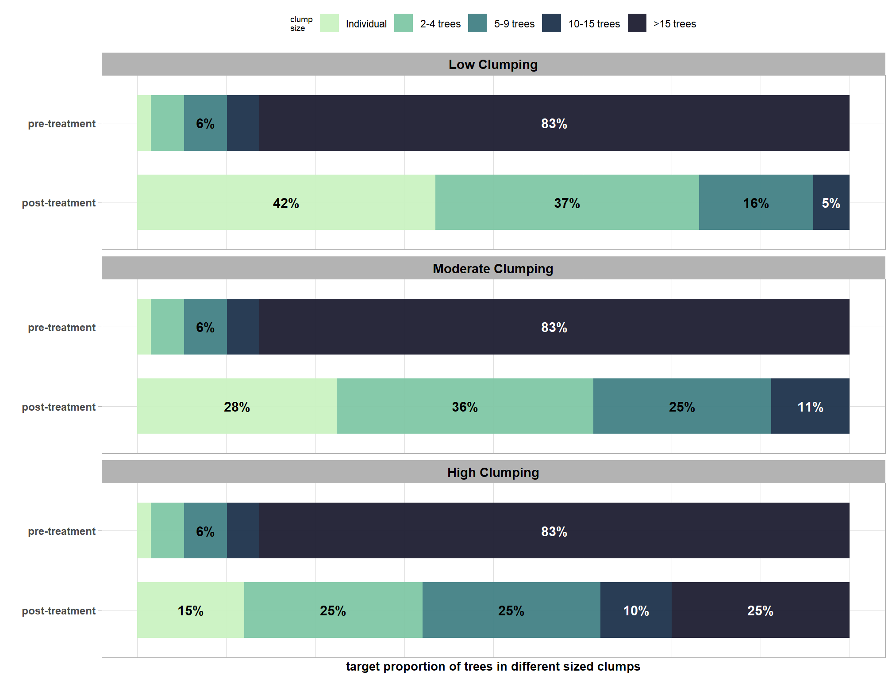
Let’s look at some common stand-level forestry metrics
### stand-level summaries
silv_metrics_temp <-
dplyr::bind_rows(
treetops_sf %>%
sf::st_drop_geometry() %>%
# dplyr::filter(dbh_cm >= ostory_dbh_cm) %>%
dplyr::ungroup() %>%
dplyr::mutate(status = "pre-treatment") %>%
dplyr::group_by(status,stand_area_ha) %>%
dplyr::summarise(
n_trees = dplyr::n_distinct(treeID)
, mean_dbh_cm = mean(dbh_cm, na.rm = T)
, mean_tree_height_m = mean(tree_height_m, na.rm = T)
, loreys_height_m = sum(basal_area_m2*tree_height_m, na.rm = T) / sum(basal_area_m2, na.rm = T)
, basal_area_m2 = sum(basal_area_m2, na.rm = T)
, sum_dbh_cm_sq = sum(dbh_cm^2, na.rm = T)
) %>%
dplyr::ungroup() %>%
dplyr::mutate(
trees_per_ha = (n_trees/stand_area_ha)
, basal_area_m2_per_ha = (basal_area_m2/stand_area_ha)
, qmd_cm = sqrt(sum_dbh_cm_sq/n_trees)
) %>%
dplyr::select(-c(sum_dbh_cm_sq)) %>%
dplyr::mutate(scenario_desc_fact = " ") %>%
dplyr::relocate(status,scenario_desc_fact)
, trees2ico_ans_trees_df %>%
sf::st_drop_geometry() %>%
dplyr::filter(is_keep_tree) %>%
dplyr::ungroup() %>%
dplyr::mutate(
status = "post-treatment"
, stand_area_ha = stand_sf$stand_area_ha[1]
) %>%
dplyr::group_by(status,scenario_desc_fact,stand_area_ha) %>%
dplyr::summarise(
n_trees = dplyr::n_distinct(treeID)
, mean_dbh_cm = mean(dbh_cm, na.rm = T)
, mean_tree_height_m = mean(tree_height_m, na.rm = T)
, loreys_height_m = sum(basal_area_m2*tree_height_m, na.rm = T) / sum(basal_area_m2, na.rm = T)
, basal_area_m2 = sum(basal_area_m2, na.rm = T)
, sum_dbh_cm_sq = sum(dbh_cm^2, na.rm = T)
) %>%
dplyr::group_by(scenario_desc_fact) %>%
dplyr::mutate(
trees_per_ha = (n_trees/stand_area_ha)
, basal_area_m2_per_ha = (basal_area_m2/stand_area_ha)
, qmd_cm = sqrt(sum_dbh_cm_sq/n_trees)
) %>%
dplyr::select(-c(sum_dbh_cm_sq)) %>%
dplyr::relocate(status,scenario_desc_fact)
) %>%
dplyr::select(
status,scenario_desc_fact
, stand_area_ha
, n_trees
, mean_dbh_cm
, qmd_cm
, mean_tree_height_m
, loreys_height_m
, trees_per_ha
, basal_area_m2_per_ha
)# table
silv_metrics_temp %>%
dplyr::mutate(
dplyr::across(
.cols = c(stand_area_ha)
, .fns = ~ scales::comma(.x, accuracy = .1)
)
, dplyr::across(
.cols = c(n_trees)
, .fns = ~ scales::comma(.x, accuracy = 1)
)
) %>%
kableExtra::kbl(
digits = 1
, escape = F
, caption = "ICO Scenarios: pre- and post-treatment silvicultral metrics"
, col.names = c(
"status","scenario"
, "area (ha)"
, "trees"
, "mean<br>DBH (cm)"
, "QMD (cm)"
, "mean<br>Ht. (m)"
, "Loreys<br>Ht. (m)"
, "TPH"
, "BA<br>m<sup>2</sup> ha<sup>-1</sup>"
)
) %>%
kableExtra::kable_styling(font_size = 12) %>%
kableExtra::collapse_rows(columns = 1, valign = "top")| status | scenario | area (ha) | trees |
mean DBH (cm) |
QMD (cm) |
mean Ht. (m) |
Loreys Ht. (m) |
TPH |
BA m2 ha-1 |
|---|---|---|---|---|---|---|---|---|---|
| pre-treatment | 9.3 | 3,406 | 24.3 | 28.6 | 12.5 | 18.8 | 366.5 | 23.5 | |
| post-treatment | Low Clumping | 9.3 | 1,173 | 27.4 | 31.1 | 13.9 | 19.2 | 126.2 | 9.6 |
| Moderate Clumping | 9.3 | 1,346 | 26.4 | 30.4 | 13.5 | 19.2 | 144.8 | 10.5 | |
| High Clumping | 9.3 | 1,504 | 24.1 | 28.4 | 12.4 | 18.8 | 161.8 | 10.3 |
visualize that
silv_metrics_temp %>%
dplyr::filter(status == "pre-treatment") %>%
dplyr::select(-scenario_desc_fact) %>%
tidyr::crossing(trees2ico_ans_trees_df %>% dplyr::distinct(scenario_desc_fact)) %>%
dplyr::mutate(scenario_desc_fact = as.character(scenario_desc_fact)) %>%
dplyr::relocate(status,scenario_desc_fact) %>%
dplyr::bind_rows(
silv_metrics_temp %>% dplyr::filter(status == "post-treatment")
) %>%
dplyr::mutate(
scenario_desc_fact = forcats::fct_inorder(scenario_desc_fact)
, status = ordered(status) %>% forcats::fct_rev()
) %>%
dplyr::select(-c(stand_area_ha)) %>%
tidyr::pivot_longer(cols = -c(scenario_desc_fact,status)) %>%
dplyr::group_by(scenario_desc_fact,name) %>%
dplyr::arrange(scenario_desc_fact,name,status) %>%
dplyr::mutate(pct_diff = (value-dplyr::lag(value))/dplyr::lag(value)) %>%
dplyr::ungroup() %>%
dplyr::mutate(
lab = paste0(
dplyr::case_when(
name == "n_trees" ~ scales::comma(value,accuracy=1)
, T ~ scales::comma(value,accuracy=0.1)
)
, dplyr::case_when(
is.na(pct_diff) ~ ""
, T ~ paste0(
"\n"
, ifelse(pct_diff<0,"-","+")
,scales::percent(abs(pct_diff),accuracy=0.1)
)
)
)
, metric = factor(
name
, ordered = T
, levels = c(
"n_trees"
,"mean_dbh_cm"
,"qmd_cm"
,"mean_tree_height_m"
,"loreys_height_m"
,"trees_per_ha"
,"basal_area_m2_per_ha"
)
, labels = c(
latex2exp::TeX("Number of Trees", output = "character")
, latex2exp::TeX("Mean DBH (cm)", output = "character")
, latex2exp::TeX("QMD (cm)", output = "character")
, latex2exp::TeX("Mean Tree Ht (m)", output = "character")
, latex2exp::TeX("Lorey's Mean Ht (m)", output = "character")
, latex2exp::TeX("Trees $ha^{-1}$")
, latex2exp::TeX("BA $m^{2} \\cdot ha^{-1}$")
)
)
, scenario_desc_fact = as.character(scenario_desc_fact) %>% stringr::str_replace_all(" ", " ~ ") %>% forcats::fct_inorder()
) %>%
ggplot2::ggplot(
mapping = ggplot2::aes(
x = status
, y = value
, label = lab
, group = 1
)
) +
ggplot2::geom_line(key_glyph = "point", alpha = 0.7, color = "gray", lwd = 1.1) +
ggplot2::geom_col(mapping = ggplot2::aes(fill = status), alpha = 1, width = 0.4) +
ggplot2::scale_fill_viridis_d(option = "magma", begin = 0.5, end = 0.9) +
ggplot2::geom_text(
vjust = -0.25, size = 2.5
) +
ggplot2::facet_grid(
rows = dplyr::vars(metric)
, cols = dplyr::vars(scenario_desc_fact)
, scales = "free_y"
, labeller = ggplot2::label_parsed
, switch = "y"
, axes = "all_x"
) +
ggplot2::scale_y_continuous(labels = scales::comma, expand = ggplot2::expansion(mult = c(0,.3)), breaks = NULL) +
ggplot2::labs(
x = "", y = ""
, subtitle = ""
) +
ggplot2::theme_light() +
ggplot2::theme(
legend.position = "none"
, axis.text.x = ggplot2::element_text(size = 8, color = "black")
, strip.text.x = ggplot2::element_text(size = 11, color = "black", face = "bold")
, strip.text.y = ggplot2::element_text(size = 9, color = "black")
, panel.grid = ggplot2::element_blank()
) 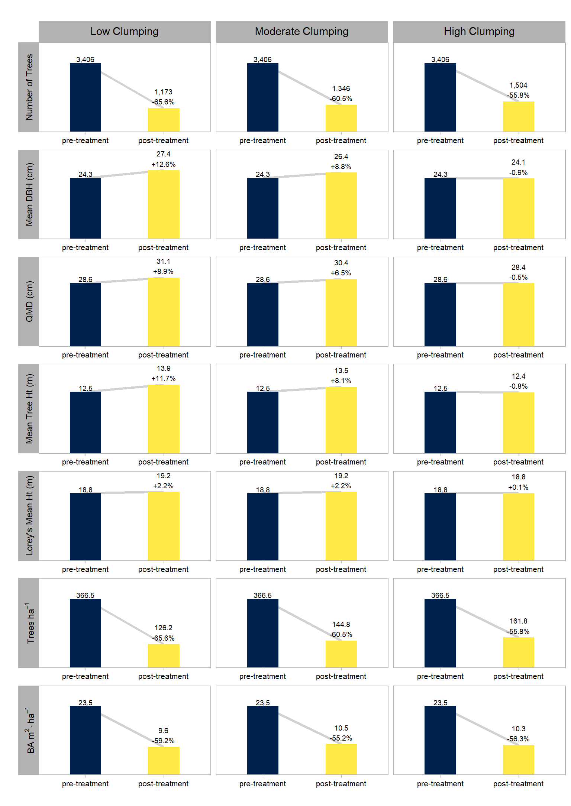
height and diameter distributions
trees2ico_ans_list %>%
purrr::map(
\(x)
x %>%
purrr::pluck("tree_list") %>%
sf::st_drop_geometry() %>%
dplyr::select(tree_height_m, dbh_cm) %>%
tidyr::pivot_longer(dplyr::everything()) %>%
dplyr::mutate(status = "pre-treatment") %>%
dplyr::bind_rows(
x %>%
purrr::pluck("tree_list") %>%
sf::st_drop_geometry() %>%
dplyr::filter(is_keep_tree) %>%
dplyr::select(tree_height_m, dbh_cm) %>%
tidyr::pivot_longer(dplyr::everything()) %>%
dplyr::mutate(status = "post-treatment")
)
) %>%
purrr::list_rbind(names_to = "scenario_id") %>%
dplyr::mutate(scenario_id = as.numeric(scenario_id)) %>%
dplyr::inner_join(
ico_targets_df %>%
dplyr::distinct(scenario_id, scenario_desc_fact)
, by = "scenario_id"
) %>%
dplyr::mutate(
status = ordered(status) %>% forcats::fct_rev()
, name = dplyr::recode_values(
name
, "tree_height_m" ~ "Tree Height (m)"
, "dbh_cm" ~ "DBH (cm)"
)
) %>%
ggplot2::ggplot(mapping = ggplot2::aes(x=value,fill = status,color = status)) +
ggplot2::geom_density(mapping = ggplot2::aes(y=ggplot2::after_stat(scaled)), alpha = 0.7, color=NA) +
# ggplot2::geom_histogram(alpha = 0.7) +
ggplot2::facet_grid(
cols = dplyr::vars(name)
, rows = dplyr::vars(scenario_desc_fact)
, switch = "y"
, axes = "all_x"
, scales = "free"
) +
ggplot2::scale_y_continuous(NULL,breaks=NULL) +
ggplot2::scale_x_continuous(limits = c(0,NA), labels = scales::comma) +
ggplot2::scale_fill_viridis_d(option = "magma", begin = 0.5, end = 0.9) +
ggplot2::scale_color_viridis_d(option = "magma", begin = 0.5, end = 0.9) +
ggplot2::labs(
fill="",x=""
, subtitle = "comparison of height and diameter distributions\npre- versus post-treatment"
) +
ggplot2::theme_light() +
ggplot2::theme(
legend.position = "top"
, strip.text = ggplot2::element_text(size = 10, color = "black", face = "bold")
, axis.text.x = ggplot2::element_text(size = 9)
, axis.text.y = ggplot2::element_blank()
, axis.ticks.y = ggplot2::element_blank()
)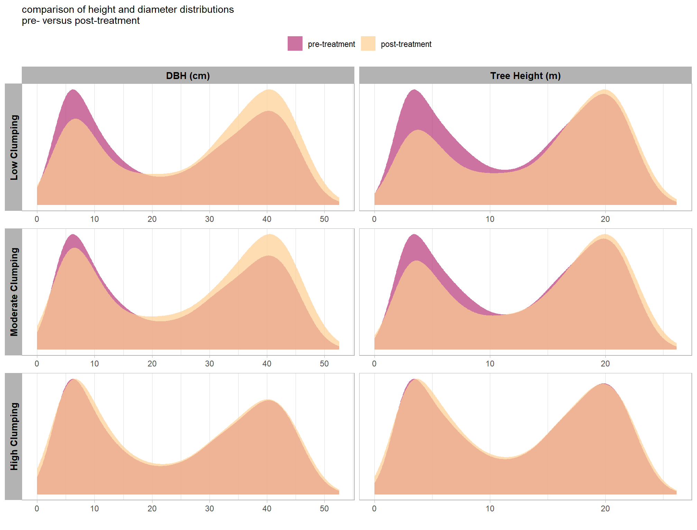
3.4.4 Treatment Spatial Pattern
let’s check out the spatial pattern resulting from the different treatment scenarios
make a function to get the distance between trees as a raster and the openings as vectors
# create function to pass a return from get_clump_summary() and get a distance raster
get_clump_dist_rast <- function(clumps_sf, stand_sf, clump_dist_m){
# rasterize the clump polygons and then calculate distance between clumps as raster
dist_rast <-
terra::rasterize(
x = clumps_sf %>% terra::vect()
, y = clumps_sf %>%
terra::vect() %>%
terra::rast(res = 0.2)
) %>%
terra::distance() %>%
# crop it to stand extent
terra::crop(
stand_sf %>%
terra::vect()
, mask = T
)
######### part 2
# now create openings vector data
openings_vect <-
dist_rast %>%
terra::classify(rcl = c(clump_dist_m/2,Inf), others = NA, include.lowest = T) %>%
terra::as.polygons(na.rm = T) %>%
sf::st_as_sf() %>%
sf::st_cast("POLYGON") %>%
dplyr::mutate(layer = dplyr::row_number()) %>%
dplyr::mutate(
openining_area_m2 = sf::st_area(geometry) %>% as.numeric()
, clump_dist_m = clump_dist_m
)
# return
return(list(dist_rast = dist_rast, openings_vect = openings_vect))
}
# do it with the pre-treatment data
pre_get_clump_dist_rast_ans <- get_clump_dist_rast(clumps_sf = trees2ico_ans_list[[1]]$pre_cut_clumps, stand_sf = stand_sf, clump_dist_m = my_clump_dist_m)
# pre_get_clump_dist_rast_ans$dist_rast %>% terra::plot()
# pre_get_clump_dist_rast_ans$openings_vect %>% terra::plot()now we’ll make a function to plot the spatial pattern roughly following Churchill et al. (2013) Figure 2
# minimum size to be considered openingn
my_min_openining_area_m2 <- 0.01*4047
# scales::show_col(pal_clump_grp)
# get_the_plts
get_the_plts_fn <- function(dist_rast, openings_vect, stand_sf, clump_polys, ttops, my_title = "", openining_area_m2_max = NA, dist_max = NA,min_openining_area_m2=40.5) {
# get the area spacing
if(is.na(openining_area_m2_max)){
openining_area_m2_max <-
openings_vect %>%
dplyr::pull(openining_area_m2) %>%
max() %>%
ceiling()
}
if(is.na(dist_max)){
dist_max <-
dist_rast %>%
terra::minmax() %>%
.[2] %>%
ceiling()
}
plt_stand <-
ggplot2::ggplot() +
ggplot2::geom_sf(data = stand_sf %>% dplyr::slice(1), color = "black", fill = NA, lwd = 1.5) +
ggplot2::scale_x_continuous(expand = c(0, 0)) +
ggplot2::scale_y_continuous(expand = c(0, 0)) +
ggplot2::labs(
x = ""
, y = ""
, subtitle = my_title
) +
ggplot2::theme_void() +
ggplot2::theme(
legend.position = "bottom" # c(0.5,1)
, legend.direction = "horizontal"
, legend.margin = ggplot2::margin(0,0,0,0)
, legend.title= ggplot2::element_text(size=8, face = "bold")
, legend.text= ggplot2::element_text(size = 7)
, legend.key = ggplot2::element_rect(fill = NA, color = NA)
, plot.subtitle = ggplot2::element_text(size = 10, hjust = 0.5, face = "bold")
)
##################################################
# plot distance raster and trees
##################################################
plt_dist_rast1 <-
# ggplot2::ggplot() +
plt_stand +
# distance
ggplot2::geom_tile(
data = dist_rast %>%
# terra::aggregate(fact = 2, fun = "max", cores = 4) %>%
# terra::crop(
# stand_boundaries %>%
# dplyr::filter(poly_name==x)
# # dplyr::filter(poly_name=="west")
# , mask = T
# ) %>%
terra::as.data.frame(xy = T) %>%
dplyr::rename(f=3)
, mapping = ggplot2::aes(x=x, y=y, fill = f)
) +
harrypotter::scale_fill_hp(
"mischief"
, na.value = "transparent"
, name = "distance to\nnearest tree (m)"
, limits = c(0,dist_max)
) +
# openings
ggplot2::geom_sf(
data = openings_vect %>%
dplyr::filter(
openining_area_m2 > min_openining_area_m2
)
, mapping = ggplot2::aes(color = openining_area_m2), fill = NA
) +
ggplot2::scale_color_gradient(
low = "gray77", high = "gray11"
, labels = scales::comma_format(accuracy = 1)
, name = "opening\narea (m²)" # latex2exp::TeX("opening\narea ($\\m^2$)")
, limits = c(0,openining_area_m2_max)
) +
# clumps
ggnewscale::new_scale_fill() +
ggplot2::geom_sf(
data = clump_polys
, mapping = ggplot2::aes(fill = clump_n_trees_grp)
, color = NA
) +
# harrypotter::scale_fill_hp_d("always", name = "clump size", drop = F) +
ggplot2::scale_fill_manual(
values = pal_clump_grp, name = "clump size", drop = F
, guide = ggplot2::guide_legend(nrow = 2, byrow = T)
) +
# tree points
ggplot2::geom_sf(data = ttops, color = "gray88", shape = ".") +
# ggplot2::labs(subtitle = paste0(nm, ": pre-treatment")) +
ggplot2::theme_void() +
ggplot2::theme(
legend.position = "bottom"
, legend.direction = "horizontal"
, plot.subtitle = ggplot2::element_text(size = 10, hjust = 0.5, face = "bold")
, legend.title= ggplot2::element_text(size=8, face = "bold")
, legend.text= ggplot2::element_text(size = 7)
)
##################################################
# highlight the openings
##################################################
plt_open1 <-
plt_stand +
# clumps
ggplot2::geom_sf(
data = clump_polys
, mapping = ggplot2::aes(fill = clump_n_trees_grp)
, color = NA
) +
# harrypotter::scale_fill_hp_d("always", name = "clump size", drop = F) +
ggplot2::scale_fill_manual(
values = pal_clump_grp, name = "clump size", drop = F
, guide = ggplot2::guide_legend(nrow = 2, byrow = T)
) +
# openings
ggnewscale::new_scale_fill() +
ggplot2::geom_sf(
data = openings_vect %>%
dplyr::filter(
openining_area_m2 > min_openining_area_m2
)
, mapping = ggplot2::aes(fill = openining_area_m2), color = NA
) +
ggplot2::scale_fill_gradient(
low = "gray77", high = "gray11"
, labels = scales::comma_format(accuracy = 1)
, name = "opening\narea (m²)" # latex2exp::TeX("opening\narea ($\\m^2$)")
, limits = c(0,openining_area_m2_max)
) +
# tree points
ggplot2::geom_sf(data = ttops, color = "gray88", shape = ".") +
# ggplot2::labs(subtitle = paste0(nm, ": pre-treatment")) +
ggplot2::theme_void() +
ggplot2::theme(
legend.position = "bottom"
, legend.direction = "horizontal"
, plot.subtitle = ggplot2::element_text(size = 10, hjust = 0.5, face = "bold")
, legend.title= ggplot2::element_text(size=8, face = "bold")
, legend.text= ggplot2::element_text(size = 7)
)
return(list(
plt_dist_rast=plt_dist_rast1
, plt_open=plt_open1
))
}get all the figures for the treatment scenarios and pre-treatment
get_clump_dist_rast_ans <-
trees2ico_ans_list %>%
purrr::map(function(x){
get_clump_dist_rast_ans <-
get_clump_dist_rast(clumps_sf = x$post_cut_clumps, stand_sf = stand_sf, clump_dist_m = my_clump_dist_m)
return(get_clump_dist_rast_ans)
})
# get max opening and dist
dist_max_temp <-
get_clump_dist_rast_ans %>%
purrr::map(
\(x)
x %>%
purrr::pluck("dist_rast") %>%
terra::minmax() %>%
.[2] %>%
ceiling()
) %>%
unlist() %>%
max(na.rm = T)
openining_area_m2_max_temp <-
get_clump_dist_rast_ans %>%
purrr::map(
\(x)
x %>%
purrr::pluck("openings_vect") %>%
dplyr::pull(openining_area_m2) %>%
max() %>%
ceiling()
) %>%
unlist() %>%
max(na.rm = T)
# plts
plt_post <-
trees2ico_ans_list %>%
purrr::imap(function(x,nm){
# get_the_plts_fn
plts <- get_the_plts_fn(
dist_rast = get_clump_dist_rast_ans[[nm]]$dist_rast
, openings_vect = get_clump_dist_rast_ans[[nm]]$openings_vect
, stand_sf = stand_sf
, clump_polys = x$post_cut_clumps
, ttops = x$tree_list %>% dplyr::filter(is_keep_tree)
, my_title = ico_targets_df %>% dplyr::filter(as.character(scenario_id)==nm) %>% dplyr::slice(1) %>% dplyr::pull(scenario_desc_fact) %>% as.character()
, openining_area_m2_max = openining_area_m2_max_temp, dist_max = dist_max_temp
, min_openining_area_m2 = my_min_openining_area_m2
)
return(plts)
})
# plt_post[[1]]$plt_dist_rast
# get_the_plts_fn
plt_pre <- get_the_plts_fn(
dist_rast = pre_get_clump_dist_rast_ans$dist_rast
, openings_vect = pre_get_clump_dist_rast_ans$openings_vect
, stand_sf = stand_sf
, clump_polys = trees2ico_ans_list[[1]]$pre_cut_clumps
, ttops = treetops_sf
, my_title = "Pre-Treatment"
, openining_area_m2_max = openining_area_m2_max_temp, dist_max = dist_max_temp
)check those plots out
the distance raster
plt_post_temp <-
plt_post %>%
purrr::map(
\(x)
x$plt_dist_rast +
ggplot2::theme(legend.position = "none") +
ggplot2::guides(color = "none", fill = "none", shape = "none")
)
patchwork::wrap_plots(
patchwork::wrap_plots(
append(
plt_post_temp
, list(
plt_pre$plt_dist_rast
)
, after = 0
)
, ncol = 2
)
, patchwork::guide_area()
, ncol = 1
, heights = c(1,0.02)
) +
patchwork::plot_layout(guides = "collect") +
patchwork::plot_annotation(
theme = ggplot2::theme(
legend.position = "bottom"
, legend.margin = ggplot2::margin(b = 11, unit = "pt")
, legend.box.margin = ggplot2::margin(b = 11, unit = "pt")
# , plot.title = ggplot2::element_text(margin = ggplot2::margin(t = -5, b = 5, unit = "pt"))
)
)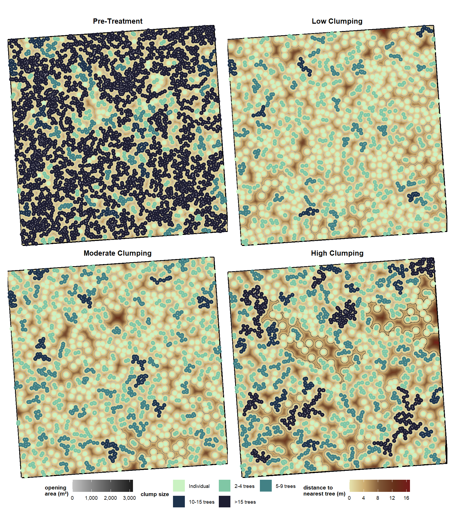
the openings
plt_post_temp <-
plt_post %>%
purrr::map(
\(x)
x$plt_open +
ggplot2::theme(legend.position = "none") +
ggplot2::guides(color = "none", fill = "none", shape = "none")
)
# plt_post_temp[[1]]
# plt_pre$plt_open
patchwork::wrap_plots(
patchwork::wrap_plots(
append(
plt_post_temp
, list(
plt_pre$plt_open
)
, after = 0
)
, ncol = 2
)
, patchwork::guide_area()
, ncol = 1
, heights = c(1,0.02)
) +
patchwork::plot_layout(guides = "collect") +
patchwork::plot_annotation(
theme = ggplot2::theme(
legend.position = "bottom"
, legend.margin = ggplot2::margin(b = 11, unit = "pt")
, legend.box.margin = ggplot2::margin(b = 11, unit = "pt")
# , plot.title = ggplot2::element_text(margin = ggplot2::margin(t = -5, b = 5, unit = "pt"))
)
)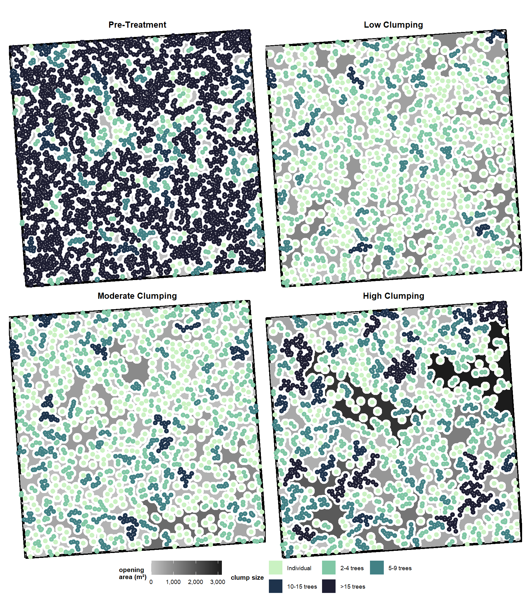
3.4.5 Treatment Cut/Leave Trees
let’s check out which trees were classified as ‘cut’ and which trees to ‘leave’ in each treatment scenario
remember that sweet height contour plot we made using pre-treatment trees and their heights? let’s use that as a background…
# plts
plt_cutleave <-
trees2ico_ans_list %>%
purrr::imap(function(x,nm){
plt <-
plt_ht_contour +
ggplot2::geom_sf(
data = x$tree_list %>%
dplyr::mutate(cut_leave = ifelse(is_keep_tree, "leave", "cut") %>% ordered()) %>%
dplyr::arrange(cut_leave)
, mapping = ggplot2::aes(color = cut_leave)
, size = 1.1, alpha = 0.7
) +
ggplot2::scale_color_manual(
values = c("gray77","navy")
, name = ""
) +
ggplot2::labs(
subtitle = ico_targets_df %>% dplyr::filter(as.character(scenario_id)==nm) %>% dplyr::slice(1) %>% dplyr::pull(scenario_desc_fact) %>% as.character()
) +
ggplot2::guides(
color = ggplot2::guide_legend(override.aes = list(shape = 15, size = 6, alpha = 1))
)
return(plt)
})
# plt_cutleave[[1]]
# patch that
patchwork::wrap_plots(
patchwork::guide_area()
# , patchwork::plot_spacer()
, patchwork::wrap_plots(
append(
plt_cutleave
, list(plt_ht_contour_trees + ggplot2::labs(subtitle = "Pre-Treatment Tree Heights") )
, after = 0
)
, ncol = 2
)
, ncol = 1
, heights = c(0.01, 1)
) +
patchwork::plot_layout(guides = "collect") +
patchwork::plot_annotation(
theme = ggplot2::theme(
legend.position = "top"
, legend.margin = ggplot2::margin(b = 0, unit = "pt")
, legend.box.margin = ggplot2::margin(b = 0, unit = "pt")
, plot.title = ggplot2::element_text(margin = ggplot2::margin(t = -5, b = 5, unit = "pt"))
)
)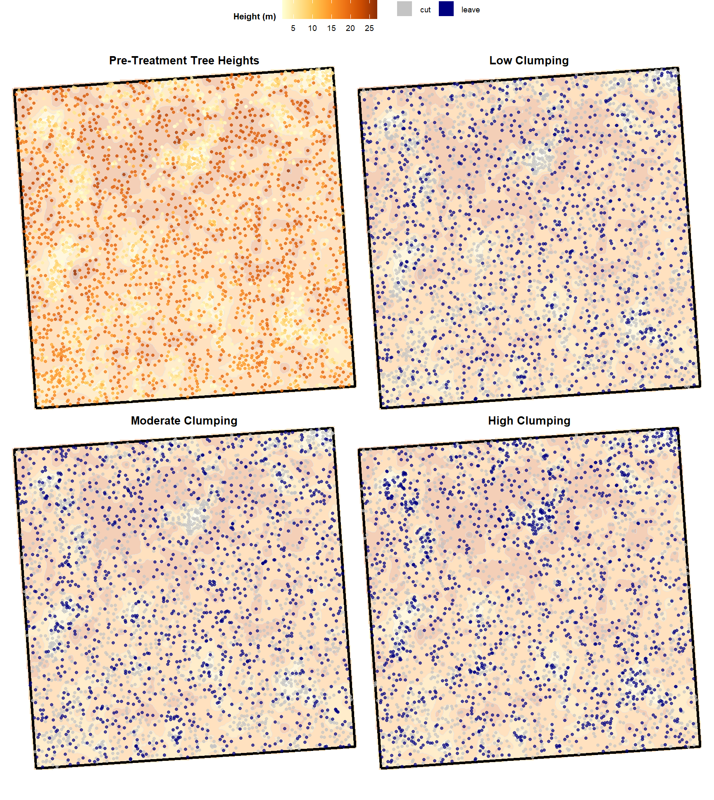
neat.
let’s look at the distribution of heights by cut/leave tree group
trees2ico_ans_trees_df %>%
sf::st_drop_geometry() %>%
dplyr::select(scenario_desc_fact, cut_leave, tree_height_m, dbh_cm) %>%
tidyr::pivot_longer(cols = -c(scenario_desc_fact, cut_leave)) %>%
dplyr::mutate(
name = dplyr::recode_values(
name
, "tree_height_m" ~ "Tree Height (m)"
, "dbh_cm" ~ "DBH (cm)"
)
) %>%
ggplot2::ggplot(mapping = ggplot2::aes(x=value,fill = cut_leave,color = cut_leave)) +
ggplot2::geom_density(mapping = ggplot2::aes(y=ggplot2::after_stat(scaled)), alpha = 0.7, color=NA) +
# ggplot2::geom_histogram(alpha = 0.7) +
ggplot2::facet_grid(
cols = dplyr::vars(name)
, rows = dplyr::vars(scenario_desc_fact)
, switch = "y"
, axes = "all_x"
, scales = "free"
) +
ggplot2::scale_y_continuous(NULL,breaks=NULL) +
ggplot2::scale_x_continuous(limits = c(0,NA), labels = scales::comma) +
ggplot2::scale_color_manual(
values = c("gray77","navy")
, name = ""
) +
ggplot2::scale_fill_manual(
values = c("gray77","navy")
, name = ""
) +
ggplot2::labs(
fill="",x=""
, subtitle = "comparison of height and diameter distributions\ncut versus leave trees"
) +
ggplot2::theme_light() +
ggplot2::theme(
legend.position = "top"
, strip.text = ggplot2::element_text(size = 10, color = "black", face = "bold")
, axis.text.x = ggplot2::element_text(size = 9)
, axis.text.y = ggplot2::element_blank()
, axis.ticks.y = ggplot2::element_blank()
)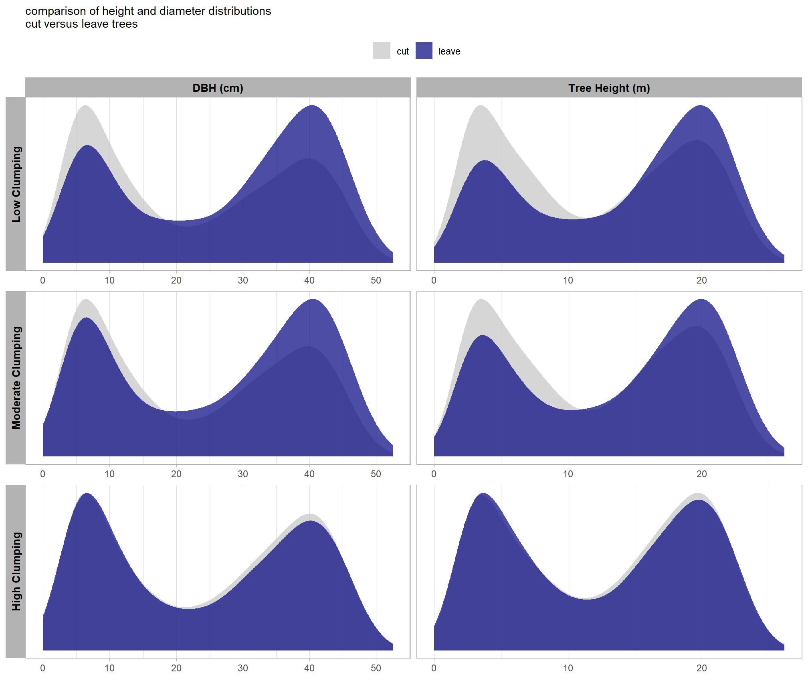
another way to see it
trees2ico_ans_trees_df %>%
sf::st_drop_geometry() %>%
dplyr::select(scenario_desc_fact, cut_leave, tree_height_m, dbh_cm) %>%
tidyr::pivot_longer(cols = -c(scenario_desc_fact, cut_leave)) %>%
dplyr::mutate(
name = dplyr::recode_values(
name
, "tree_height_m" ~ "Tree Height (m)"
, "dbh_cm" ~ "DBH (cm)"
)
) %>%
# dplyr::glimpse()
ggplot2::ggplot(
mapping = ggplot2::aes(y = value, x = cut_leave)
) +
ggplot2::geom_boxplot(
mapping = ggplot2::aes(fill = cut_leave)
, width = 0.5
, alpha = 0.88
, color = "black"
, outliers = F
) +
# ggplot2::geom_text(
# mapping = ggplot2::aes(label = lab)
# , color = "black", size = 2.5, vjust = -0.2
# ) +
ggplot2::scale_fill_manual(
values = c("gray77","navy")
, name = ""
) +
ggplot2::scale_x_discrete(drop = F) +
ggplot2::scale_y_continuous(
# breaks = seq(0,1,by=0.2)
labels = scales::comma
, limits = c(0,NA)
, expand = ggplot2::expansion(mult = c(0,0.1))
) +
ggplot2::facet_grid(
cols = dplyr::vars(scenario_desc_fact)
, rows = dplyr::vars(name)
# , ncol = 2
, axes = "all"
, scales = "free_y"
# , switch = "y"
) +
ggplot2::labs(
x = ""
, y = ""
, fill = ""
, subtitle = "comparison of height and diameter distributions\ncut versus leave trees"
) +
ggplot2::theme_light() +
ggplot2::theme(
legend.position = "none"
, strip.text = ggplot2::element_text(size = 11, color = "black", face = "bold")
, axis.text.x = ggplot2::element_text(
color = "black", face = "bold"
# size = 9, angle = 45, hjust = 1, vjust = 1
)
# , axis.text.x = ggplot2::element_text(size = 12)
# , axis.text.y = ggplot2::element_blank()
# , axis.ticks.y = ggplot2::element_blank()
)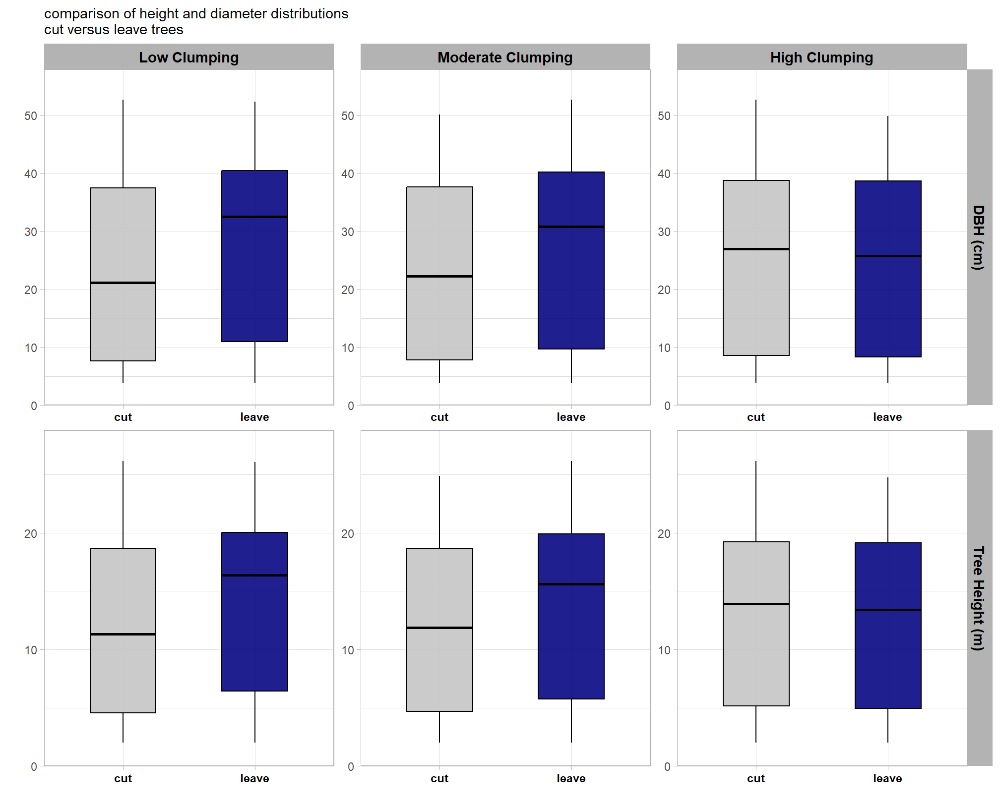
table that
trees2ico_ans_trees_df %>%
sf::st_drop_geometry() %>%
dplyr::select(scenario_desc_fact, cut_leave, tree_height_m, dbh_cm) %>%
dplyr::group_by(
scenario_desc_fact, cut_leave
) %>%
dplyr::summarise(
dplyr::across(
dplyr::where(is.numeric)
, .fns = list(
mean = ~mean(.x,na.rm=T)
, sd = ~sd(.x,na.rm=T)
# , q10 = ~quantile(.x,na.rm=T,probs=0.1)
# , q50 = ~quantile(.x,na.rm=T,probs=0.5)
# , q90 = ~quantile(.x,na.rm=T,probs=0.9)
# , min = ~min(.x,na.rm=T)
# , max = ~max(.x,na.rm=T)
, range = ~paste0(
scales::comma(min(.x,na.rm=T), accuracy = 0.1)
,"-"
, scales::comma(max(.x,na.rm=T), accuracy = 0.1)
)
)
)
, n = dplyr::n()
) %>%
dplyr::ungroup() %>%
dplyr::select(-c(n)) %>%
dplyr::mutate(
dplyr::across(
dplyr::where(is.numeric)
, ~scales::comma(.x,accuracy=0.1)
)
) %>%
# ncol()
kableExtra::kbl(
caption = "comparison of height and diameter distributions <br />cut versus leave trees"
, col.names = c(
"scenario", "cut/leave"
, rep(c("Mean","Std Dev","Range"), times = 2)
)
, escape = F
) %>%
kableExtra::kable_styling(font_size = 12) %>%
kableExtra::add_header_above(
c(
" "=2
, "Height (m)" = 3
, "DBH (cm)" = 3
)
, escape = F
) %>%
kableExtra::column_spec(seq(2,8,by=3), border_right = TRUE, include_thead = TRUE) %>%
kableExtra::collapse_rows(columns = 1, valign = "top") | scenario | cut/leave | Mean | Std Dev | Range | Mean | Std Dev | Range |
|---|---|---|---|---|---|---|---|
| Low Clumping | cut | 11.7 | 7.1 | 2.0-26.2 | 22.7 | 14.9 | 3.8-52.6 |
| leave | 13.9 | 7.0 | 2.0-26.1 | 27.4 | 14.8 | 3.8-52.2 | |
| Moderate Clumping | cut | 11.8 | 7.1 | 2.0-24.9 | 22.9 | 14.8 | 3.8-50.0 |
| leave | 13.5 | 7.2 | 2.0-26.2 | 26.4 | 15.1 | 3.8-52.6 | |
| High Clumping | cut | 12.5 | 7.2 | 2.0-26.2 | 24.5 | 15.0 | 3.8-52.6 |
| leave | 12.4 | 7.2 | 2.0-24.8 | 24.1 | 15.1 | 3.8-49.8 |
3.4.6 Openings
let’s quantify the pre- and post-treatment openings. Churchill et al. (2016) define discuss openings:
Openings are a critical part of dry forests. Identifying and quantifying them in low density forests is challenging, however, as most openings are not well defined “gaps”. Prescriptions that leave significant proportions of trees in clumps will automatically create a certain amount of small and medium sized openings (< ~1/3 rd acre), especially if there are edaphic factors or disturbance agents creating openings. However, we have learned that creation of large openings must be specified. (p.37)
and
From experience and simulation analysis we have found the minimum size for quantifying patterns of tree clumps in most dry forests is about 1 ha (2.5 ac). However, quantification of openings requires larger stem maps, usually around 3 to 4 ha (about 7 to 10 ac), depending on opening sizes. (p.30)
they also define “small openings (<1/2 acre)” and “large openings…should be ~0.75 to 1 acre and wavy”
An interesting snippet about openings based on field-marked ICO prescription implementation is discussed in Churchill et al. (2013):
Finally, our assumption that large openings would occur as a result of creating clumps did not prove correct (Fig. 2). Crews were uncomfortable with creating large openings, especially when it required marking large trees for removal. (p.448)
and
Another lesson learned was the need to provide explicit direction for the creation of large openings. Retaining large, fire tolerant trees is a key principle of dry forest restoration and increasing resilience (Agee and Skinner, 2005; Hessburg and Agee, 2003; Taylor and Skinner, 2003), and removal of pre-settlement era trees (old trees) is not necessary to restore pattern (Franklin and Johnson, 2012). However, we concur with others that rigid diameter limits, with no flexibility for young trees or fire intolerant species, can conflict with restoration of spatial pattern and other objectives (Abella et al., 2006; North et al., 2007). (p.452)
with that background let’s look at the openings created under our scenario ICO prescriptions. the trees2ico framework is an objective, rule-based marking algorithm that can operate with or without diameter limits. since it is an automated, algorithmic approach, it is completely free from human marking hesitancy and simply strives to meet the BA and tree clump proportion targets that human crews may struggle to execute in the field.
We define openings as contiguous spatial areas that originate 6.0 m away from the nearest tree stem, which is equal to a 3.0 m buffer from the nearest tree crown edge based on a typical overstory tree crown radius of 3.0 m. Although these openings may form highly sinuous (“wavy”) corridors winding through tree clump groups, they are closed-off wherever the proximity of an adjacent tree or clump becomes less than the 6.0 m limit. We also require that an opening must have an area greater than 40.5 square meters (0.01 acres) to be considered an actual opening.
openings_temp <-
get_clump_dist_rast_ans %>%
purrr::map(~purrr::pluck(.x,"openings_vect")) %>%
purrr::list_rbind(names_to = "scenario_id") %>%
dplyr::mutate(
scenario_id = as.numeric(scenario_id)
) %>%
dplyr::inner_join(
ico_targets_df %>%
dplyr::distinct(scenario_id, scenario_desc_fact)
, by = "scenario_id"
) %>%
sf::st_set_geometry("geometry") %>%
dplyr::bind_rows(
pre_get_clump_dist_rast_ans$openings_vect %>%
dplyr::mutate(scenario_id=99) %>%
sf::st_set_geometry("geometry") %>%
dplyr::select(scenario_id,layer,openining_area_m2,clump_dist_m)
) %>%
dplyr::mutate(
scenario_desc_fact = scenario_desc_fact %>%
forcats::fct_na_value_to_level(level = "Pre-Treatment") %>%
forcats::fct_relevel("Pre-Treatment")
# openings desc
, openings_desc = dplyr::case_when(
openining_area_m2 < 0.5*4047 ~ "small opening"
, openining_area_m2 > 0.75*4047 ~ "large opening" # large openings...should be ~0.75 to 1 acre and wavy
, T ~ "medium opening"
) %>%
ordered(
levels = c("small opening","medium opening","large opening")
)
) %>%
dplyr::filter(
openining_area_m2 > my_min_openining_area_m2
)
# sf::st_drop_geometry() %>% dplyr::count(scenario_desc_fact)
# dplyr::glimpse()
# openings_temp %>% names()let’s first look at the proportion of the stand that is covered by openings under the different scenarios
openings_temp %>%
sf::st_drop_geometry() %>%
dplyr::group_by(scenario_desc_fact) %>%
dplyr::summarise(
sum_openining_area_m2 = sum(openining_area_m2, na.rm =T)
) %>%
dplyr::ungroup() %>%
dplyr::mutate(
sum_openining_area_ha = sum_openining_area_m2/10000
, pct_open = sum_openining_area_ha/stand_sf$stand_area_ha
, lab = paste0(scales::comma(sum_openining_area_ha,accuracy=0.01), " ha \n",scales::percent(pct_open,accuracy=1), " of stand" )
) %>%
# dplyr::glimpse()
ggplot2::ggplot(
mapping = ggplot2::aes(y = sum_openining_area_ha, x = scenario_desc_fact)
) +
ggplot2::geom_col(
width = 0.6
, color = NA, alpha = 0.8
, fill = "plum4"
) +
ggplot2::geom_text(
mapping = ggplot2::aes(label = lab)
, color = "black", size = 3, vjust = -0.2
) +
ggplot2::scale_x_discrete(drop = F) +
ggplot2::scale_y_continuous(
# breaks = seq(0,1,by=0.2)
labels = scales::comma
, expand = ggplot2::expansion(mult = c(0,0.1))
) +
ggplot2::labs(
x = "", y = "total open area (ha)"
, subtitle = "openings by treatment scenario"
) +
ggplot2::theme_light() +
ggplot2::theme(
legend.position = "none"
, axis.text.x = ggplot2::element_text(size = 10, face = "bold")
)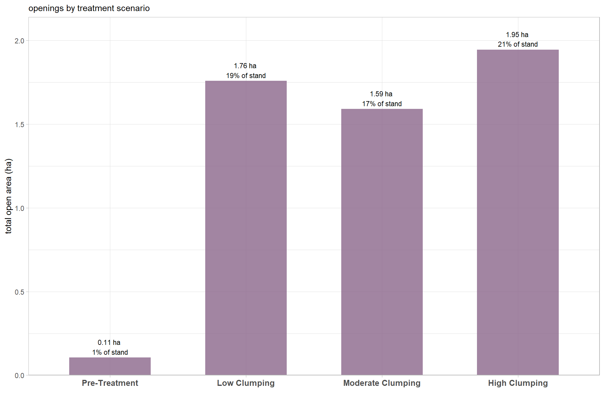
interesting. table that
openings_temp %>%
sf::st_drop_geometry() %>%
dplyr::select(scenario_desc_fact, openining_area_m2) %>%
dplyr::group_by(scenario_desc_fact) %>%
dplyr::summarise(
dplyr::across(
dplyr::where(is.numeric)
, .fns = list(
sum = ~sum(.x,na.rm=T)
, mean = ~mean(.x,na.rm=T)
# , q10 = ~quantile(.x,na.rm=T,probs=0.1)
# , q50 = ~quantile(.x,na.rm=T,probs=0.5)
# , q90 = ~quantile(.x,na.rm=T,probs=0.9)
# , min = ~min(.x,na.rm=T)
# , max = ~max(.x,na.rm=T)
, range = ~paste0(
scales::comma(min(.x,na.rm=T), accuracy = 0.1)
,"-"
, scales::comma(max(.x,na.rm=T), accuracy = 0.1)
)
)
)
, n = dplyr::n()
) %>%
dplyr::ungroup() %>%
dplyr::mutate(
n = scales::comma(n,accuracy=1)
, dplyr::across(
dplyr::where(is.numeric)
, ~scales::comma(.x,accuracy=0.1)
)
) %>%
dplyr::relocate(scenario_desc_fact,n) %>%
# ncol()
kableExtra::kbl(
caption = "opening size distribution<br />by opening size class"
, col.names = c(
"scenario"
, "# openings"
, rep(c("Total","Mean","Range"), times = 1)
)
, escape = F
) %>%
kableExtra::kable_styling(font_size = 12) %>%
kableExtra::add_header_above(
c(
" "=2
, "opening area (m<sup>2</sup>)" = 3
)
, escape = F
) %>%
kableExtra::column_spec(seq(2,6,by=3), border_right = TRUE, include_thead = TRUE) %>%
kableExtra::collapse_rows(columns = 1, valign = "top") | scenario | # openings | Total | Mean | Range |
|---|---|---|---|---|
| Pre-Treatment | 17 | 1,064.5 | 62.6 | 40.5-176.8 |
| Low Clumping | 62 | 17,584.9 | 283.6 | 40.7-1,170.2 |
| Moderate Clumping | 73 | 15,906.4 | 217.9 | 42.8-1,565.9 |
| High Clumping | 45 | 19,456.3 | 432.4 | 41.1-3,168.4 |
let’s look at the distribution of openings by opening size where a small opening is classified as between 0.01 and 0.5 acres, large openings are > 0.75 acres, and medium openings are anything between
openings_temp %>%
sf::st_drop_geometry() %>%
dplyr::select(scenario_desc_fact,openings_desc, openining_area_m2) %>%
dplyr::group_by(scenario_desc_fact,openings_desc) %>%
dplyr::summarise(
dplyr::across(
dplyr::where(is.numeric)
, .fns = list(
sum = ~sum(.x,na.rm=T)
, mean = ~mean(.x,na.rm=T)
# , q10 = ~quantile(.x,na.rm=T,probs=0.1)
# , q50 = ~quantile(.x,na.rm=T,probs=0.5)
# , q90 = ~quantile(.x,na.rm=T,probs=0.9)
# , min = ~min(.x,na.rm=T)
# , max = ~max(.x,na.rm=T)
, range = ~paste0(
scales::comma(min(.x,na.rm=T), accuracy = 0.1)
,"-"
, scales::comma(max(.x,na.rm=T), accuracy = 0.1)
)
)
)
, n = dplyr::n()
) %>%
dplyr::ungroup() %>%
dplyr::mutate(
n = scales::comma(n,accuracy=1)
, dplyr::across(
dplyr::where(is.numeric)
, ~scales::comma(.x,accuracy=0.1)
)
) %>%
dplyr::relocate(scenario_desc_fact,openings_desc,n) %>%
# ncol()
kableExtra::kbl(
caption = "opening size distribution<br />by opening size class"
, col.names = c(
"scenario", "opening class"
, "# openings"
, rep(c("Total","Mean","Range"), times = 1)
)
, escape = F
) %>%
kableExtra::kable_styling(font_size = 12) %>%
kableExtra::add_header_above(
c(
" "=3
, "opening area (m<sup>2</sup>)" = 3
)
, escape = F
) %>%
kableExtra::column_spec(seq(3,6,by=3), border_right = TRUE, include_thead = TRUE) %>%
kableExtra::collapse_rows(columns = 1, valign = "top") | scenario | opening class | # openings | Total | Mean | Range |
|---|---|---|---|---|---|
| Pre-Treatment | small opening | 17 | 1,064.5 | 62.6 | 40.5-176.8 |
| Low Clumping | small opening | 62 | 17,584.9 | 283.6 | 40.7-1,170.2 |
| Moderate Clumping | small opening | 73 | 15,906.4 | 217.9 | 42.8-1,565.9 |
| High Clumping | small opening | 43 | 13,609.1 | 316.5 | 41.1-1,873.6 |
| medium opening | 1 | 2,678.8 | 2,678.8 | 2,678.8-2,678.8 | |
| large opening | 1 | 3,168.4 | 3,168.4 | 3,168.4-3,168.4 |
mostly small openings were created under all scenarios, let’s look at the distribution of opening size by treatment scenario
openings_temp %>%
sf::st_drop_geometry() %>%
dplyr::mutate(scenario_desc_fact=forcats::fct_rev(scenario_desc_fact)) %>%
# dplyr::glimpse()
ggplot2::ggplot(
mapping = ggplot2::aes(x = openining_area_m2, y = scenario_desc_fact)
) +
ggplot2::geom_boxplot(
width = 0.4
, alpha = 0.9
, color = "black"
, outliers = F
, fill = "plum4"
) +
ggplot2::scale_y_discrete(drop = F) +
ggplot2::scale_x_continuous(
# breaks = seq(0,1,by=0.2)
labels = scales::comma
, limits = c(0,NA)
, breaks = scales::breaks_extended(n=8)
# , expand = ggplot2::expansion(mult = c(0,0.1))
) +
ggplot2::labs(
y = ""
, x = "opening\narea (m²)"
, subtitle = "opening size distribution"
) +
ggplot2::theme_light() +
ggplot2::theme(
legend.position = "none"
, strip.text = ggplot2::element_text(size = 11, color = "black", face = "bold")
, axis.text.y = ggplot2::element_text(
color = "black", face = "bold"
# size = 9, angle = 45, hjust = 1, vjust = 1
)
# , axis.text.x = ggplot2::element_text(size = 12)
# , axis.text.y = ggplot2::element_blank()
# , axis.ticks.y = ggplot2::element_blank()
)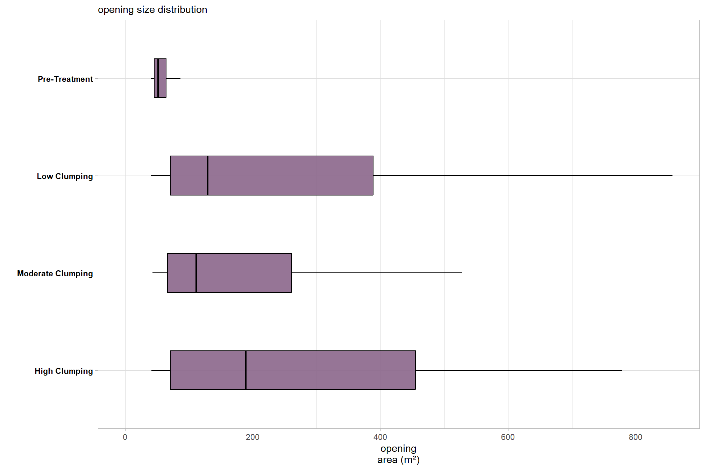